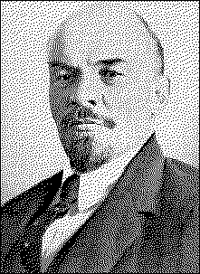

V. I. LENINTHE |  |
PUBLISHER'S NOTE
|
HOW KAUTSKY TRANSFORMED MARX INTO AN ORDINARY
BOURGEOIS AND PROLETARIAN DEMOCRACY
CAN THERE BE EQUALITY BETWEEN THE EXPLOITED AND THE
THE SOVIETS DARE NOT BECOME STATE ORGANIZATIONS
THE CONSTITUENT ASSEMBLY AND THE SOVIET REPUBLIC
SUBSERVIENCY TO THE BOURGEOISIE IN THE GUISE OF
APPENDIX I. THESES ON THE CONSTITUENT ASSEMBLY
APPENDIX II. VADERVELDE'S NEW BOOK ON THE STATE |
1 |
page 1
Kautsky's pamphlet, The Dictatorship of the Proletariat, recently published in Vienna (Wien, I918, Ignaz Brand, 63 pp.) is a most lucid example of that utter and ignominious bankruptcy of the Second International about which all honest Socialists in all countries have been talking for a long time. The proletarian revolution is now becoming a practical issue in a number of countries, and an examination of Kautsky's renegade sophistries and complete renunciation of Marxism is therefore essential.
First of all, however, it should be emphasized that the present writer has had numerous occasions, from the very beginning of the war, to point to Kautsky's rupture with Marxism. A number of articles published in the course of 1914-16 in the Sotsial-Demokrat[1] and the Kommunist,[2] issued abroad, dealt with this subject. These articles were afterwards collected and published by the Petrograd Soviet under the title Against the Stream, by G. Zinoviev and N. Lenin (Petrograd, 1918, 550 pp.). In a pamphlet published in Geneva in 1915 and translated into German and French [3] in the same year I wrote about "Kautskyism" as follows:
page 2
"Kautsky, the biggest authority in the Second International, gives us a highly typical and glaring example of how the verbal recognition of Marxism has led actually to its conversion into 'Struveism,' or into 'Brentanoism' (that is, into a liberal bourgeois doctrine, which recognizes a non-revolutionary 'class' struggle of the proletariat, and which was most shockingly expressed by the Russian writer Struve and the German economist Brentano). We see this also from the example of Plekhanov. By means of obvious sophistry they rob Marxism of its revolutionary living spirit; they recognize everything in Marxism except revolutionary methods of struggle, preaching and preparing them, training the masses precisely in this direction. Kautsky, in an unprincipled fashion, 'reconciles' the fundamental idea of social-chauvinism, recognition of defence of the fatherland in the present war, with a diplomatic, sham concession to the Lefts in the shape of abstaining from voting credits, the verbal claim of being in the opposition, etc. Kautsky, who in 1909 wrote a whole book on the approaching epoch of revolutions and on the connection between war and revolutions, Kautsky, who in 1912 signed the Basle Manifesto on taking revolutionary advantage of the impending war, is now, in every key, justifying and embellishing social-chauvinism and, like Plekhanov, joins the bourgeoisie in ridiculing all thought of revolution, all steps towards the directly revolutionary struggle.
"The working class cannot play its world-revolutionary role unless it wages a ruthless struggle against this renegacy, spinelessness, subservience to opportunism and unexampled vulgarization of the theories of Marxism. Kautskyism is not a fortuity, but a social product of the contradictions
page 3
within the Second International, a combination of loyalty to Marxism in words and subordination to opportunism in deeds." (G. Zinoviev and N. Lenin, Socialism and War, Geneva, 1915, pp. 13-14.)
Again, in my book Imperialism, as the Latest Stage of Capitalism,[4] which was written in 1916 and published in Petrograd in 1917, I examined in detail the theoretical fallacy of all Kautsky's arguments about imperialism. I quoted Kautsky's definition of imperialism: "Imperialism is a product of highly developed industrial capitalism. It consists in the striving of every industrial capitalist nation to bring under its control or to annex larger and larger areas of agrarian (Kautsky's italics) territory, irrespective of what nations inhabit those regions." I showed how utterly incorrect this definition was, and how it was "adapted" to the glossing over of the most profound contradictions of imperialism, and then to reconciliation with opportunism. I gave my own definition of imperialism: "Imperialism is capitalism in that stage of development in which the dominance of monopolies and finance capital has established itself; in which the export of capital has acquired pronounced importance; in which the division of the world among the international trusts has begun; in which the division of all territories of the globe among the biggest capitalist powers has been completed."[5] I showed that Kautsky's critique of imperialism is at an even lower level than the bourgeois, philistine critique. Finally, in August and September 1917 -- that is, before the proletarian revolution in Russia (October 25 [November 7], 1917) I wrote a pamphlet (published in Petrograd at the beginning of 1918) entitled The State and Revolution, Marxist Teaching on the State and the Tasks of the Proletariat in the
page 4
Revotution. In Chapter VI of this book, entitled "The Vulgarization of Marxism by the Opportunists," I devoted special attention to Kautsky, showing that he had completely distorted Marx's teaching, trimming it up to suit opportunism and that he had "repudiated the revolution in deeds, while accepting it in words."
In substance, the chief theoretical mistake Kautsky makes in his pamphlet on the dictatorship of the proletariat lies precisely in those opportunist distortions of Marx's teachings on the state which I have exposed in detail in my pamphlet, The State and Revolution.
It was necessary to make these preliminary remarks for they show that I had openly accused Kautsky of being a renegade long before the Bolsheviks assumed state power and were condemned by him on that account.
page 5
The fundamental question that Kautsky discusses in his pamphlet is that of the root content of proletarian revolution, namely, the dictatorship of the proletariat. This is a question that is of the greatest importance for all countries, especially for the advanced ones, especially for the belligerent countries, and especially at the present time. One may say without fear of exaggeration that this is the most important problem of the entire proletarian class struggle. Hence it is necessary to deal with it with particular attention.
Kautsky formulates the question as follows: "The contrast between the two socialist trends" (i.e., the Bolsheviks and the non-Bolsheviks) is "the contrast between two radically different methods: the democratic and the dictatorial." (P. 3.)
Let us point out, in passing, that when calling the non-Bolsheviks in Russia, i.e., the Mensheviks and Socialist-Revolutionaries, Socialists, Kautsky was guided by their appellation, that is, by a word, and not by the actual place they are occupying in the struggle between the proletariat and the bourgeoisie. What an excellent understanding and application of Marxism! But of this more anon.
page 6
At present we must deal with the main point, viz., with Kautsky's great discovery of the "fundamental contrast" between the "democratic and dictatorial methods." That is the crux of the matter; that is the essence of Kautsky's pamphlet. And that is such a monstrous theoretical muddle, such a complete renunciation of Marxism, that Kautsky, it must be confessed, has far excelled Bernstein.
The question of the dictatorship of the proletariat is a question of the relation of the proletarian state to the bourgeois state, of proletarian democracy to bourgeois democracy. One would think that this is as plain as noonday. But Kautsky, like a schoolmaster who has become as dry as dust from repeating the same old textbooks on history, persistently turns his back on the twentieth century and his face to the eighteenth century, and for the hundredth time, in a number of paragraphs, incredibly tediously chews the old cud over the relation of bourgeois democracy to absolutism and medievalism!
It sounds indeed as if he were chewing rags in his sleep!
But this means that he utterly fails to understand what is what! One cannot help smiling at Kautsky's efforts to make it appear that there are people who preach "contempt for democracy" (p. 11) and so forth. It is by such twaddle that ( Kautsky finds himself compelled to befog and confuse the issue, for he poses it in the manner of the liberals, speaks of democracy in general, and not of bourgeois democracy; he even avoids using this precise, class term, and, instead, tries to speak about "pre-socialist" democracy. This windbag devotes almost one-third of his pamphlet, twenty pages out of a total of sixty-three, to this twaddle, which is so agreeable to the bourgeoisie, for it is tantamount to embellishing bour-
page 7
geois democracy, and obscures the question of the proletarian revolution.
But, after all, the title of Kautsky's pamphlet is The Dictatorship of the Proletariat. Everybody knows that this is the very essence of Marx's doctrine; and after a lot of irrelevant twaddle Kautsky was obliged to quote Marx's words on the dictatorship of the proletariat.
But the way in which he, the "Marxist," did it was simply farcical! Listen to this:
"This view" (which Kautsky dubs "contempt for democracy") "rests upon a single word of Karl Marx's." This is what Kautsky literally says on page 20. And on page 60 the same thing is repeated even in the form that they (the Bolsheviks) "opportunely recalled the little word" (that is literally what he says -- des Wörtchens!!) "about the dictatorship of the proletariat which Marx once used in 1875 in a letter."
Here is Marx's "little word":
"Between capitalist and communist society lies the period of the revolutionary transformation of the one into the other. There corresponds to this also a political transition period in which the state can be nothing but the revolutionary dictatorship of the proletariat."[6]
First of all, to call this celebrated proposition of Marx's, which sums up the whole of his revolutionary teaching, "a single word" and even "a little word," is an insult to and complete renunciation of Marxism. It must not be forgotten that Kautsky knows Marx almost by heart, and, judging by all he has written, he has in his desk, or in his head, a number of pigeonholes in which all that was ever written by Marx is most carefully filed so as to be ready at hand for quotation. Kautsky cannot but know that both Marx and Engels, in their
page 8
letters as well as in their published works, repeatedly spoke about the dictatorship of the proletariat, before and especially after the Paris Commune. Kautsky cannot but know that the formula "dictatorship of the proletariat" is merely a more historically concrete and scientifically exact formulation of the proletariat's task of "smashing" the bourgeois state machine, about which both Marx and Engels, in summing up the experience of the Revolution of 1848, and, still more so, of 1871, spoke for forty years, between 1852 and 1891.
How is this monstrous distortion of Marxism by that Marxist textualist Kautsky to be explained? As far as the philosophical roots of this phenomenon are concerned, it amounts to the substitution of eclecticism and sophistry for dialectics. Kautsky is a past master in this sort of substitution. Regarded from the standpoint of practical politics, it amounts to subserviency to the opportunists, that is, in the last analysis to the bourgeoisie. Since the outbreak of the war, Kautsky has made increasingly rapid progress in this art of being a Marxist in words and a lackey of the bourgeoisie in deeds, until he has become a virtuoso in it.
One feels still more convinced of this when one examines the remarkable way in which Kautsky "interprets" Marx's "little word" about the dictatorship of the proletariat. Listen:
"Marx, unfortunately, neglected to show us in greater detail how he conceived this dictatorship.". . . (This is the utterly mendacious phrase of a renegade, for Marx and Engels gave us, indeed, quite a number of most detailed indications, which Kautsky, the Marxist textualist, has deliberately ignored.) "Literally, the word dictatorship means the abolition of democracy. But, of course, taken literally, this word also means the undivided rule of a single person unrestricted by any laws -- an autocracy, which differs from despotism only in the fact that it is not regarded as a permanent state institution, but as a transient emergency measure.
page 9
that Marx in this connection had in mind a dictatorship in the literal sense of the term.
We have deliberately quoted this argument in full in order that the reader may clearly see the methods Kautsky the "theoretician" employs.
Kautsky chose to approach the question in such a way as to begin with a definition of the "word" dictatorship.
Very well. Everyone has a sacred right to approach a question in whatever way he pleases. One must only distinguish a serious and honest approach from a dishonest one. Anyone who wanted to be serious in approaching the question in this way ought to have given his own definition of the "word." Then the question would have been put fairly and squarely. But Kautsky does not do that. "Literally," he writes, "the word dictatorship means the abolition of democracy."
In the first place, this is not a definition. If Kautsky wanted to avoid giving a definition of the concept dictatorship, why did he choose this particular approach to the question?
Secondly, it is obviously wrong. It is natural for a liberal to speak of "democracy" in general; but a Marxist will never forget to ask: "for what class?" Everyone knows, for instance (and Kautsky the "historian" knows it too), that rebellions, or even strong ferment, among the slaves in antique times at once revealed the fact that the antique state was essentially a dictatorship of the slaveowners. Did this dictatorship
page 10
abolish democracy among, and for, the slaveowners? Everybody knows that it did not.
Kautsky the "Marxist" said this monstrously absurd and untrue thing because he "forgot" the class struggle. . . .
In order to transform Kautsky's liberal and false assertion into a Marxian and true one, one must say: dictatorship does not necessarily mean the abolition of democracy for the class that exercises the dictatorship over the other classes; but it necessarily does mean the abolition (or very material restriction, which is also a form of abolition) of democracy for the class over which, or against which, the dictatorship is exercised.
But, however true this assertion may be, it does not give a definition of dictatorship.
Let us examine Kautsky's next sentence:
". . . But, of course, taken literally, this word also means the undivided rule of a single person unrestricted by any laws."
Like a blind puppy casually sniffing first in one direction and then in another, Kautsky accidentally stumbled upon one true idea (namely, that dictatorship is rule unrestricted by any laws), nevertheless, he failed to give a definition of dictatorship, and, moreover, he gave vent to an obvious historical falsehood, viz., that dictatorship means the rule of a single person. This is even grammatically incorrect, since dictatorship may also be exercised by a handful of persons, or by an oligarchy, or by a class, etc.
Kautsky then goes on to point out the difference between dictatorship and despotism, but, although what he says is obviously incorrect, we shall not dwell upon it, as it is wholly irrelevant to the question that interests us. Everyone knows Kautsky's inclination to turn from the twentieth century to the eighteenth, and from the eighteenth century
page 11
to classical antiquity, and we hope that the German proletariat, after it has attained its dictatorship, will bear this inclination of his in mind and appoint him, say, teacher of ancient history at some high school. To try to evade a definition of the dictatorship of the proletariat by philosophizing about despotism is either crass stupidity or very clumsy trickery.
As a result, we find that, having undertaken to discuss the dictatorship, Kautsky rattled off a great deal of manifest lies, but has not given a definition! Yet, without trusting his mental faculties, he might have had recourse to his memory and extracted from his "pigeonholes" all those instances in which Marx speaks of dictatorship. Had he done so, he would certainly have arrived either at the following definition or at one in substance coinciding with it:
Dictatorship is rule based directly upon force and unrestricted by any laws.
The revolutionary dictatorship of the proletariat is rule won and maintained by the use of violence by the proletariat against the bourgeoisie, rule that is unrestricted by any laws.
And this simple truth, a truth that is as plain as noonday to every class-conscious worker (who represents the masses, and not an upper stratum of petty-bourgeois scoundrels who have been bribed by the capitalists, such as are the social-imperialists of all countries), this truth, which is obvious to every representative of the exploited classes that are fighting for their emancipation, this truth, which is beyond dispute for every Marxist, has to be "extracted by main force" from the most learned M. Kautsky! How is it to be explained? Simply by that spirit of servility with which the leaders of the Second International, who have become contemptible sycophants in the service of the bourgeoisie, are imbued.
page 12
Kautsky first committed a sleight of hand by proclaiming the obvious nonsense that the word dictatorship, in its literal sense, means the dictatorship of a single person, and then -- on the strength of this sleight of hand I -- he declared that "hence" Marx's words about the dictatorship of a class were not meant in the literal sense (but in one in which dictatorship does not imply revolutionary violence, but the "peaceful" winning of a majority under bourgeois -- mark you -- "democracy").
One must, if you please, distinguish between a "condition" and a "form of government." A wonderfully profound distinction; it is like drawing a distinction between the "condition" of stupidity of a man who reasons foolishly and the "form" of his stupidity.
Kautsky finds it necessary to interpret dictatorship as a "condition of rulership" (this is the literal expression he uses on the very next page, p. 21), because then revolutionary violence, and violent revolution, disappear. The "condition of rulership" is a condition in which any majority finds itself under . . . "democracy"! Thanks to such a fraudulent trick, revolution happily disappears !
But the trick is too crude and will not save Kautsky. One cannot hide the fact that dictatorship presupposes and implies a "condition," one so disagreeable to renegades, of revolutionary violence of one class against another. The absurdity of drawing a distinction between a "condition" and a "form of government" becomes patent. To speak of forms of government in this connection is trebly stupid, for every schoolboy knows that monarchy and republic are two different forms of government. It must be explained to Mr. Kautsky that both these forms of government, like all transitional "forms of government" under capitalism, are but varieties of the bourgeois state, that is, of the dictatorship of the bourgeoisie.
page 13
Lastly, to speak of forms of government is not only a stupid, but also a very crude falsification of Marx, who was very clearly speaking here of this or that form or type of state, and not of forms of government.
The proletarian revolution is impossible without the forcible destruction of the bourgeois state machine and the substitution for it of a new one which, in the words of Engels, is "no longer a state in the proper sense of the word."[7]
But Kautsky finds it necessary to befog and belie all this -- his renegade position demands it.
See to what wretched subterfuges he resorts.
First subterfuge. . . . "That Marx in this case did not have in mind a form of government is proved by the fact that he was of the opinion that in England and America a peaceful revolution was possible, i.e., by democratic means."
The form of government has absolutely nothing to do with the case here, for there are monarchies which are not typical of the bourgeois state, such, for instance, as have no military clique, and there are republics which are quite typical in this respect, such, for instance, as have a military clique and a bureaucracy. This is a universally known historical and political fact, and Kautsky will not succeed in falsifying it.
If Kautsky had wanted to argue in a serious and honest manner he would have asked himself: are there historical laws relating to revolution which know of no exception? And the reply would have been: no, there are no such laws. Such laws only apply to the typical, to what Marx once termed the "ideal," meaning average, normal, typical capitalism.
Further, was there in the seventies anything which made England and America exceptional in regard to what we are now discussing? It will be obvious to anyone at all familiar with the requirements of science in regard to the problems of
page 14
history that this question must be put. To fail to put it is tantamount to falsifying science, to engaging in sophistry. And, the question having been put, there can be no doubt as to the reply: the revolutionary dictatorship of the proletariat is violence against the bourgeoisie; and the necessity of such violence is particularly created, as Marx and Engels have repeatedly explained in detail (especially in The Civil War in France and in the preface to it), by the existence of a military clique and a bureaucracy. But it is precisely these institutions that were n o n - e x i s t e n t precisely in England and in America and precisely in the 1870's, when Marx made his observations (they do exist in England and in America now)!
Kautsky has to resort to trickery literally at every step to cover up his apostasy!
And note how he inadvertently betrayed the cloven hoof; he wrote: "peacefully, that is, in a democratic way"!!
In defining dictatorship, Kautsky tried his utmost to conceal from the reader the fundamental feature of this concept, namely, revolutionary violence. But now the truth is out: it is a question of the contrast between peaceful and violent revolutions.
That is where the trouble lies. Kautsky had to resort to all these subterfuges, sophistries and fraudulent falsifications only in order to dissociate himself from violent revolution, and to conceal his renunciation of it, his desertion to the liberal labour policy, i.e., to the bourgeoisie. That is where the trouble lies.
Kautsky the "historian" so shamelessly falsifies history that he "forgets" the fundamental fact that pre-monopoly capitalism -- which reached its zenith actually 1870's -- was by virtue of its fundamental economic traits, which found
page 15
most typical expression in England and in America, distinguished by a, relatively-speaking, maximum fondness for peace and freedom. Imperialism, on the other hand, i.e., monopoly capitalism, which finally matured only in the twentieth century, is, by virtue of its fundamental economic traits, distinguished by a minimum fondness for peace and freedom, and by a maximum and universal development of militarism. To "fail to notice" this in discussing the extent to which a peaceful or violent revolution is typical or probable is to stoop to the position of a most ordinary lackey of the bourgeoisie.
Second subterfuge: The Paris Commune is a dictatorship of the proletariat, but it was elected by universal suffrage, i.e., without depriving the bourgeoisie of the franchise, i.e., "democratically." And Kautsky says triumphantly: ". . . The dictatorship of the proletariat was for Marx" (or: according to Marx) "a condition which necessarily follows from pure democracy, if the proletariat forms the majority" (bei überwiegendem Proletariat, S. 21).
This argument of Kautsky's is so amusing that one truly suffers from a veritable embarras de richesses (an embarrassment due to the wealth . . . of replies that can be made to it). Firstly, it is well known that the flower, the General Staff, the upper strata of the bourgeoisie had fled from Paris to Versailles. In Versailles there was the "Socialist" Louis Blanc -- which, by the way, proves the falsity of Kautsky's assertion that "all trends" of Socialism took part in the Paris Commune. Is it not ridiculous to represent the division of the inhabitants of Paris into two belligerent camps, one of which gathered the entire militant and politically active section of the bourgeoisie, as "pure democracy" with "universal suffrage"?
page 16
Secondly, the Paris Commune waged war against Versailles as the workers' government of France against the bourgeois government. What has "pure democracy" and "universal suffrage" got to do with it, when Paris was deciding the fate of France? When Marx expressed the opinion that the Paris Commune had committed a mistake in failing to seize the bank, which belonged to the whole of France,[8] did he proceed from the principles and practice of "pure democracy"?
Really, it was obvious that Kautsky was writing in a country where the people are forbidden by the police to laugh "in crowds," otherwise Kautsky would have been killed by ridicule.
Thirdly, I would respectfully remind Mr. Kautsky, who knows Marx and Engels by heart, of the following appreciation of the Paris Commune given by Engels from the point of view of . . . "pure democracy":
"Have these gentlemen" (the anti-authoritarians) "ever seen a revolution? A revolution is certainly the most authoritarian thing there is; it is the act whereby one part of the population imposes its will upon the other part by means of rifles, bayonets and cannon -- authoritarian means, if such there be at all; and if the victorious party does not want to have fought in vain, it must maintain this rule by means of the terror which its arms inspire in the reactionaries. Would the Paris Commune have lasted a single day if it had not made use of this authority of the armed people against the bourgeois? Should we not, on the contrary, reproach it for not having used it freely enough?"[9]
Here you have your "pure democracy"! How Engels would have ridiculed the vulgar petty bourgeois, the "Social Democrat" (in the French sense of the 'forties and the general
page 17
European sense of 1914-18), who took it into his head to talk about "pure democracy" in a society divided into classes!
But enough. It is impossible to enumerate all the various absurdities Kautsky goes to the length of, since every phrase he utters is a bottomless pit of apostasy.
Marx and Engels analyzed the Paris Commune in a most detailed manner and showed that its merit lies in its attempt to smash, to break up the "ready-made state machinery." Marx and Engels considered this condition to be so important that this was the o n l y amendment they introduced in 1872 in the "obsolete" (in parts) program of the Communist Manifesto.[10] Marx and Engels showed that the Paris Commune had abolished the army and the bureaucracy, had abolished parliamentarism, had destroyed "that parasitic excrescence, the state," etc.; but the sage Kautsky, donning his nightcap, repeats the fairy tale about "pure democracy," which has been told a thousand times by liberal professors.
Not without reason did Rosa Luxemburg declare, on August 4, 1914, that German Social-Democracy was now a stinking corpse.
Third subterfuge: "When we speak of the dictatorship as a form of government we cannot speak of the dictatorship of a class, since a class, as we have already pointed out, can only rule but not govern. . . ." It is "organizations" or "parties" that govern.
That is a muddle, a disgusting muddle, Mr. "Muddle Counsellor"! Dictatorship is not a "form of government"; that is ridiculous nonsense. And Marx does not speak of the "form of government" but of the form or type of state. That is something altogether different, altogether different. It is altogether wrong, too, to say that a class cannot govern: such an absurdity could only have been uttered by a "parlia-
page 18
mentary cretin," who sees nothing but bourgeois parliaments and notices nothing but "ruling parties." Any European country will provide Kautsky with examples of government by a ruling class, for instance, by the landlords in the Middle Ages, in spite of their insufficient organization.
To sum up: Kautsky has in a most unparalleled manner distorted the concept dictatorship of the proletariat, and has transformed Marx into an ordinary liberal; that is, he himself has sunk to the level of a liberal who utters banal phrases about "pure democracy," embellishing and glossing over the class content of bourgeois democracy, and shrinking, above all, from the use of revolutionary violence by the oppressed class. By so "interpreting" the concept "revolutionary dictatorship of the proletariat" as to expunge the revolutionary violence of the oppressed class against its oppressors, Kautsky beat the world record in the liberal distortion of Marx. The renegade Bernstein has proved to be a mere puppy compared with the renegade Kautsky.
page 19
The question which Kautsky has so disgustingly muddled up really stands as follows.
If we are not to mock at common sense and history, it is obvious that we cannot speak of "pure Democracy" so long as different classes exist; we can only speak of class democracy. (Be it said in parenthesis that "pure democracy" is not only an ignorant phrase, revealing a lack of understanding both of the class struggle and of the nature of the state, but also a thrice-empty phrase, since in communist society democracy will wither away in the process of changing and becoming a habit, but will never be "pure" democracy.)
"Pure democracy" is the mendacious phrase of a liberal who wants to fool the workers. History knows of bourgeois democracy which takes the place of feudalism, and of proletarian democracy which takes the place of bourgeois democracy.
When Kautsky devotes dozens of pages to "proving" the truth that bourgeois democracy is progressive compared with medievalism, and that the proletariat must unfailingly utilize it in its struggle against the bourgeoisie, that in fact is just
page 20
liberal twaddle intended to fool the workers. This is a truism, not only for educated Germany, but also for uneducated Russia. Kautsky is simply throwing "learned" dust in the eyes of the workers when, with an important mien, he talks about Weitling and the Jesuits of Paraguay and many other things, in order to avoid telling about the b o u r g e o i s essence of modern, i.e., capitalist, democracy.
Kautsky takes from Marxism what is acceptable to the liberals, to the bourgeoisie (the criticism of the Middle Ages, and the progressive historical role of capitalism in general and of capitalist democracy in particular), and discards, passes in silence, glosses over all that in Marxism which is unacceptable to the bourgeoisie (the revolutionary violence of the proletariat against the bourgeoisie for the latter's destruction). That is why Kautsky, by virtue of his objective position and irrespective of what his subjective convictions may be, inevitably proves to be a lackey of the bourgeoisie.
Bourgeois democracy, although a great historical advance in comparison with medievalism, always remains, and under capitalism cannot but remain, restricted, truncated, false and hypocritical, a paradise for the rich and a snare and a deception for the exploited, for the poor. It is this truth, which forms a most essential part of Marx's teachings, that Kautsky the "Marxist" has failed to understand. On this -- the fundamental -- issue Kautsky offers "delights" for the bourgeoisie, instead of a scientific criticism of those conditions which make every bourgeois democracy only a democracy for the rich.
Let us first recall to the mind of the most learned Mr. Kautsky the theoretical propositions of Marx and Engels which that textualist has so disgracefully "forgotten" (in
page 21
order to please the bourgeoisie), and then explain the matter as popularly as possible.
Not only the ancient and feudal, but also "the modern representative state is an instrument of exploitation of wage labour by capital." (Engels, in his work on the state.)[11] "As, therefore, the state is only a transitional institution which is used in the struggle, in the revolution, in order to hold down one's adversaries by force, it is pure nonsense to talk of a free people's state: so long as the proletariat still uses the state, it does not use it in the interests of freedom but in order to hold down its adversaries, and as soon as it becomes possible to speak of freedom the state as such ceases to exist." (Engels, in his letter to Bebel, March 28, 1875.) "In reality the state is nothing but a machine for the oppression of one class by another, and indeed in the democratic republic no less than in the monarchy." (Engels, preface to The Civil War in France by Marx.)[12] Universal sufferage is "the gauge of the maturity of the working class. It cannot and never will be anything more than the present-day state." (Engels, in his work on the state.[13] Mr. Kautsky very tediously chews the cud over the first part of this proposition, which is acceptable to the bourgeoisie. But as to the second part, which we have italicized and which is not acceptable to the bourgeoisie, the renegade Kautsky passes in silence!) "The Commune was to be a working, not a parliamentry, body, executive and legislative at the same time. . . . Instead of deciding once in three or six years which member of the ruling class was to represent and repress (ver- und zertreten) the people in parliament, universal suffrage was to serve the people, constituted in Communes, as individual suffrage serves every other employer in the search for the workers, foremen and bookkeepers for his business." (Marx
page 22
in his work on the Paris Commune, The Civil War in France.)[14]
Every one of these propositions, which are excellently known to the most learned Mr. Kautsky, is a slap in his face and lays bare his apostasy. Nowhere in his pamphlet does Kautsky reveal the slightest understanding of these truths. His whole pamphlet is a sheer mockery of Marxism!
Take the fundamental laws of modern states, take their administration, take the right of assembly, freedom of the press, or "equality of all citizens before the law," and you will see at every step evidence of the hypocrisy of bourgeois democracy with which every honest and class-conscious worker is familiar. There is not a single state, however democratic, which has no loopholes or reservations in its constitution guaranteeing the bourgeoisie the possibility of dispatching troops against the workers, of proclaiming martial law, and so forth, in case of a "violation of public order," and actually in case the exploited class "violates" its position of slavery and tries to behave in a nonslavish manner. Kautsky shamelessly embellishes bourgeois democracy and omits to mention, for instance, how the most democratic and republican bourgeois in America or Switzerland deal with workers on strike.
Oh, the wise and learned Kautsky keeps silent about these things! That learned politician does not realize that to remain silent on this matter is despicable. He prefers to tell the workers nursery tales of the kind that democracy means "protecting the minority." It is incredible, but it is a fact! In the summer of this year of our Lord 1918, in the fifth year of the world imperialist slaughter and the strangulation of internationalist minorities (i.e., those who have not despicably betrayed Socialism, like the Renaudels and
page 23
Longuets, the Scheidemanns and Kautskys, the Hendersons and Webbs et al.) in all "democracies" of the world, the learned Mr. Kautsky sweetly, very sweetly, sings the praises of "protection of the minority." Those who are interested may read this on page 15 of Kautsky's pamphlet. And on page 16 this learned . . . individual tells you about the Whigs and Tories in England in the eighteenth century!
Oh, wonderful erudition! Oh, refined servility to the bourgeoisiel Oh, civilized belly-crawling and boot-licking before the capitalists! If I were Krupp or Scheidemann, or Clemenceau or Renaudel, I would pay Mr. Kautsky millions, reward him with Judas kisses, praise him before the workers and urge "socialist unity" with "honourable" men like him. To write pamphlets against the dictatorship of the proletariat, to talk about the Whigs and Tories in England in the eighteenth century, to assert that democracy means "protecting the minority," and remain silent about pogroms against internationalists in the "democratic" republic of America -- is this not rendering lackey service to the bourgeoisie?
The learned Mr. Kautsky has "forgotten" -- accidentally forgotten, probably . . . a "trifle"; namely, that the ruling party in a bourgeois democracy extends the protection of the minority only to another bourgeois party, while on all serious, profound and fundamental issues the proletariat gets martial law or pogroms, instead of the "protection of the minority." The more highly developed a democracy is, the more imminent are pogroms or civil war in connection with any profound political divergence which is dangerous to the bourgeoisie. The learned Mr. Kautsky could have studied this "law" of bourgeois democracy in connection with the Dreyfus case in republican France, with the lynching of
page 24
Negroes and internationalists in the democratic republic of America, with the case of Ireland and Ulster in democratic Britain,[15] with the baiting of the Bolsheviks and the organization of pogroms against them in April 1917 in the democratic republic of Russia. I have purposely chosen examples not only from the time of the war but also from prewar time, the time of peace. But mealy-mouthed Mr. Kautsky is pleased to shut his eyes to these facts of the twentieth century, and instead to tell the workers wonderfully new, remarkably interesting, unusually edifying and incredibly important things about the Whigs and Tories of the eighteenth century!
Take the bourgeois parliament. Can it be that learned Kautsky has never heard that the more highly democracy is developed, the more the bourgeois parliaments are subjected by the stock exchange and the bankers? This does not mean that we must not make use of bourgeois parliaments (the Bolsheviks made better use of them than any other party in the world, for in 1912-14 we captured the entire workers' curia in the Fourth Duma). But it does mean that only a liberal can forget the historical limitations and conditional character of bourgeois parliamentarism as Kautsky does. Even in the most democratic bourgeois state the oppressed masses at every step encounter the crying contradiction between the formal equality proclaimed by the "democracy" of the capitalists and the thousands of real limitations and subterfuges which turn the proletarians into wage slaves. It is precisely this contradiction that is opening the eyes of the masses to the rottenness, mendacity and hypocrisy of capitalism. It is this contradiction that the agitators and propagandists of Socialism are constantly exposing to the masses, in order to prepare them for revolution! And now that the era of revolutions has begun, Kautsky turns his back upon
page 25
it and begins to extol the charms of moribund bourgeois democracy.
Proletarian democracy, of which Soviet government is one of the forms, has brought a development and expansion of democracy hitherto unprecedented in the world, precisely for the vast majority of the population, for the exploited and toiling people. To write a whole pamphlet about democracy, as Kautsky did, in which two pages are devoted to dictatorship and scores to "pure democracy," and fail to notice this fact, means completely distorting the subject in a liberal way.
Take foreign policy. In no bourgeois state, not even in the most democratic, is it conducted openly. The masses are deceived everywhere, and in democratic France, Switzerland, America, England this is done on an incomparably wider scale and in an incomparably subtler manner than in other countries. The Soviet government has torn the veil of mystery from foreign policy in a revolutionary manner. Kautsky has not noticed this, he keeps silent about it, although in the era of predatory wars and secret treaties for the "division of spheres of influence" (i.e., for the partition of the world among the capitalist bandits) the subject is one of cardinal importance for on it depends the question of peace, the life and death of tens of millions of people.
Take the organization of the state. Kautsky picks at all manner of "trifles," down to the argument that under the Soviet constitution elections are "indirect," but he misses the essence of the matter. He fails to see the class nature of the state apparatus, of the machinery of state. Under bourgeois dcmocracy the capitalists, by thousands of tricks -- which are the more artful and effective the more "pure" democracy is developed -- push the masses away from the work of administration, from freedom of the press, the right of
page 26
assembly, etc. The Soviet government is the first in the world (or strictly speaking the second, because the Paris Commune began to do the same thing) to enlist the masses, specifically the exploited masses, in the work of administration. The toiling masses are barred from participation in bourgeois parliaments (which never decide important questions under bourgeois democracy; they are decided by the stock exchange and the banks) by thousands of obstacles, and the workers know and feel, see and realize perfectly well that the bourgeois parliaments are institutions alien to them, instruments for the oppression of the proletarians by the bourgeoisie, institutions of a hostile class, of the exploiting minority.
The Soviets are the direct organization of the toiling and exploited masses themselves, which helps them to organize and administer their own state in every possible way. And in this it is the vanguard of the toilers and exploited, the urban proletariat, that enjoys the advantage of being best organized by the large enterprises; it is easier for it than for all others to elect and watch elections. The Soviet organization automatically helps to unite all the toilers and exploited around their vanguard, the proletariat. The old bourgeois apparatus -- the bureaucracy, the privileges of wealth, of bourgeois education, of social connections, etc. (these practical privileges are the more varied, the more highly bourgeois democracy is developed) -- all this disappears under the Soviet form of organization. Freedom of the press ceases to be hypocrisy, because the printing plants and stocks of paper are taken away from the bourgeoisie. The same thing applies to the best buildings, the palaces, the mansions and manor houses. The Soviet power took thousands upon thousands of these best buildings from the exploiters at one
page 27
stroke, and in this way made the right of assembly -- without which democracy is a fraud -- a m i l l i o n t i m e s more "democratic" for the masses. Indirect elections to nonlocal Soviets make it easier to hold Congresses of Soviets, they make the entire apparatus less costly, more flexible, more accessible to the workers and peasants at a time when life is seething and it is necessary to be able very quickly to recall one's local deputy or to delegate him to the general Congress of Soviets.
Proletarian democracy is a m i l l i o n t i m e s more democratic than any bourgeois democracy; Soviet power is a million times more democratic than the most democratic bourgeois republic.
To fail to see this one must either deliberately serve the bourgeoisie, or be politically as dead as a doornail, unable to see real life from behind the dusty pages of bourgeois books, be thoroughly imbued with bourgeois-democratic prejudices, and thereby objectively convert himself into a lackey of the bourgeoisie.
To fail to see this one must be incapable of presenting the question from the point of view of the oppressed classes.
Is there a single country in the world, even among the most democratic bourgeois countries, in which the average rank-and-file worker, the average rank-and-file village labourer, or village semi-proletarian generally (i.e., the representative of the oppressed masses, the overwhelming majority of the population), enjoys anything approaching such liberty of holding meetings in the best buildings, such liberty of using the largest printing plants and biggest stocks of paper to express his ideas and to defend his interests, such liberty of promoting men and women of his own class to administer and to "put into shape" the state, as in Soviet Russia?
page 28
It is ridiculous to think that Mr. Kautsky could find in any country even one out of a thousand of well-informed workers or agricultural labourers who would have any doubts as to the reply to this question. Instinctively, from hearing fragments of admissions of the truth in the bourgeois press, the workers of the whole world sympathize with the Soviet Republic precisely because they regard it as a proletarian democracy, a democracy for the poor, and not a democracy for the rich that every bourgeois democracy, even the best, actually is.
We are governed (and our state is "put into shape") by bourgeois bureaucrats, by bourgeois members of parliament, by bourgeois judges -- such is the simple, obvious and indisputable truth, which tens and hundreds of millions of people belonging to the exploited classes in all bourgeois countries, including the most democratic, know from their living experience, feel and realize every day.
But in Russia the bureaucratic machine has been completely smashed, razed to the ground; the old judges have all been sent packing, the bourgeois parliament has been dispersed -- and far more accessible representation has been given to the workers and peasants; t h e i r Soviets have replaced the bureaucrats, t h e i r or Soviets have been placed in control of the bureaucrats, and t h e i r Soviets have been authorized to elect the judges. This fact alone is enough to cause all the oppressed classes to recognize that the Soviet power, i.e., the present form of the dictatorship of the proletariat, is a million times more democratic than the most democratic bourgeois republic.
Kautsky does not understand this truth, which is so clear and obvious to every worker, because he has "forgotten," "unlearned" to put the question: democracy f o r w h a t
page 29
c l a s s ? He argues from the point of view of "pure" (i.e., nonclass? or above-class?) democracy. He argues like Shylock: my "pound of flesh" and nothing else. Equality for all citizens -- otherwise there is no democracy.
We must ask the learned Kautsky, the "Marxist" and "Socialist" Kautsky:
Can there be equality between the exploited and the exploiters?
It is monstrous, it is incredible that one should have to put such a question in discussing a book written by the ideological leader of the Second International. But "having put your hand to the plough, don't look back," and having undertaken to write about Kautsky, I must explain to the learned man why there can be no equality between the exploiters and the exploited.
page 30
Kautsky argues as follows:
(1) "The exploiters have always formed only a small minority of the population."
That is indisputably true. Taking this as the starting point, what should be the argument? One may argue in a Marxist, a socialist way; in which case one would take as the basis the relation between the exploited and the exploiters. Or one may argue in a liberal, a bourgeois-democratic way; and in that case one would take as the basis the relation between the majority and the minority.
If we argue in a Marxist way, we must say: the exploiters inevitably transform the state (and we are speaking of democracy, i.e., one of the forms of the state) into an instrument of the rule of their class, the exploiters, over the exploited. Hence, so long as there are exploiters who rule the majority, the exploited, the democratic state must inevitably be a democracy for the exploiters. A state of the exploited must fundamentally differ from such a state; it must be a
page 31
democracy for the exploited, and a means of suppressing the exploiters; and the suppression of a class means inequality for that class, its exclusion from "democracy."
If we argue in a liberal way, we must say: the majority decides, the minority submits. Those who do not submit are punished. That is all. Nothing need be said about the class character of the state in general, or of "pure democracy" in particular, because it is irrelevant; for a majority is a majority and a minority is a minority. A pound of flesh is a pound of flesh, and that is all there is to it.
And this is exactly the way Kautsky argues.
(2) "Why should the rule of the proletariat assume, and necessarily assume, a form which is incompatible with democracy?" (P. 21.) Then follows a very detailed and a very verbose explanation, backed by a quotation from Marx and the election figures of the Paris Commune, to the effect that the proletariat is in the majority. The conclusion is: "A regime which is so strongly rooted in the masses has not the slightest reason for encroaching upon democracy. It cannot always dispense with violence in cases when violence is employed to suppress democracy. Violence can only be met with violence. But a regime which knows that it has the backing of the masses will employ violence only in order to protect democracy and not to destroy it. It would be simply suicidal if it attempted to do away with its most reliable basis -- universal suffrage, that deep source of mighty moral authority." (P. 22.)
You see, the relation between the exploited and the exploiters has vanished in Kautsky's argument. All that remains is majority in general, minority in general, democracy in general, the "pure democracy" with which we are already familiar.
page 32
And all this, mark you, is said apropos of the Paris Commune! To make things clearer we will quote Marx and Engels to show what they said on the subject of dictatorship, apropos of the Paris Commune:
Marx: ". . . When the workers substitute their revolutionary dictatorship for the dictatorship of the bourgeoisie . . . in order to break down the resistance of the bourgeoisie . . . the workers invest the state with a revolutionary and transitional form. . . .''[16]
Engels: ". . . if the victorious party" (in a revolution) "does not want to have fought in vain, it must maintain this rule by means of the terror which its arms inspire in the reactionaries. Would the Paris Commune have lasted a single day if it had not made use of this authority of the armed people against the bourgeois? Should we not, on the contrary, reproach it for not having used it freely enough?. . .''[17]
Engels: "As, therefore, the state is only a transitional institution which is used in the struggle, in the revolution, in order to hold down one's adversaries by force, it is pure nonsense to talk of a free people's state: so long as the proletariat still uses the state, it does not use it in the interests of freedom but in order to hold down its adversaries, and as soon as it becomes possible to speak of freedom the state as such ceases to exist. . . .''[18]
Kautsky is as far removed from Marx and Engels as heaven is from earth, as a liberal from a proletarian revolutionary. The pure democracy and simple "democray" that Kautsky talks about is merely a paraphrase of the "free people's state," i.e., pure nonsense. Kautsky, with the learned air of a most learned armchair fool, or with the innocent air of a ten-year-old schoolgirl, asks: why do we need a dictator-
page 33
ship when we have a majority? And Marx and Engels explain:
-- In order to break down the resistance of the bourgeoisie;
-- in order to inspire the reactionaries with fear;
-- in order to maintain the authority of the armed people against the bourgeoisie;
-- in order that the proletariat may forcibly hold down its adversaries.
Kautsky does not understand these explanations. Infatuated with the "purity" of democracy, blind to its bourgeois character, he "consistently" urges that the majority, since it is the majority, need not "break down the resistance" of the minority, nor "forcibly hold it down" -- it is sufficient to suppress cases of infringement of democracy. Infatuated with the "purity" of democracy, Kautsky inadvertently commits the same little error that all bourgeois democrats always commit, namely, he takes formal equality (which is nothing but a fraud and hypocrisy under capitalism) for actual equality! Quite a trifle!
The exploiter and the exploited cannot be equal.
This truth, however unpleasant it may be to Kautsky, nevertheless forms the essential content of Socialism.
Another truth: there can be no real, actual equality until all possibility of the exploitation of one class by another has been totally destroyed.
The exploiters can be defeated at one stroke in the event of a successful uprising at the centre, or of a revolt in the army. But except in very rare and special cases, the exploiters cannot be destroyed at one stroke. It is impossible to expropriate all the landlords and capitalists of a country of any size at one stroke. Furthermore, expropriation alone, as a
page 34
legal or political act, does not settle the matter by a long way, because it is necessary to depose the landlords and capitalists in actual fact, to replace their management of the factories and estates by a different management, workers' management, in actual fact. There can be no equality between the exploiters -- who for many generations have stood out because of their education, conditions of wealthy life, and habits -- and the exploited, the majority of whom even in the most advanced and most democratic bourgeois republics are downtrodden, backward, ignorant, intimidated and disunited. For a long time after the revolution the exploiters inevitably continue to enjoy a number of great practical advantages: they still have money (since it is impossible to abolish money all at once); some movable property -- often fairly considerable; they still have various connections, habits of organization and management, knowledge of all the "secrets" (customs, methods, means and possibilities) of management, superior education, close connections with the higher technical personnel (who live and think like the bourgeoisie), incomparably greater experience in the art of war (this is very important), and so on, and so forth.
If the exploiters are defeated in one country only -- and this, of course, is typical, since a simultaneous revolution in a number of countries is a rare exception, they still remain stronger than the exploited, for the international connections of the exploiters are enormous. That a section of the exploited from the least advanced section of the middle peasant, artisan and similar masses, may, and indeed do, follow the exploiters has been proved hitherto by all revolutions, in cluding the Commune (for there were also proletarians among the Versailles troops, which the most learned Kautsky has "forgotten").
page 35
In these circumstances, to assume that in a revolution which is at all profound and serious the issue is decided simply by the relation between the majority and the minority is the acme of stupidity, the silliest prejudice of a common or garden liberal, an attempt to deceive the masses by concealing from them a well-established historical truth. This historical truth is that in every profound revolution, a prolonged, stubborn and desperate resistance of the exploiters, who for a number of years retain important practical advantages over the exploited, is the rule. Never -- except in the sentimental fantasies of the sentimental fool Kautsky -- will the exploiters submit to the decision of the exploited majority without trying to make use of their advantages in a last desperate battle, or series of battles.
The transition from capitalism to Communism represents an entire historical epoch. Until this epoch has terminated, the exploiters inevitably cherish the hope of restoration, and this bope is converted into attempts at restoration. And after their first serious defeat, the overthrown exploiters -- who had not expected their overthrow, never believed it possible, never conceded the thought of it -- throw themselves with energy grown tenfold, with furious passion and hatred grown a hundredfold, into the battle for the recovery of the "paradise," of which they have been deprived, on behalf of their families, who had been leading such a sweet and easy life and whom now the "common herd" is condemning to ruin and destitution (or to "common" labour . . .). In the train of the capitalist exploiters follow the broad masses of the petty bourgeoisie, with regard to whom decades of historical experience of all countries testify that they vacillate and hesitate, one day marching behind the proletariat and the next day taking fright at the difficulties of the revolution;
page 36
that they become panic-stricken at the first defeat or semi-defeat of the workers, grow nervous, run about aimlessly, snivel, and rush from one camp into the other -- just like our Mensheviks and Socialist-Revolutionaries.
And in these circumstances, in an epoch of desperate acute war, when history has placed on the order of the day the question whether age-old and thousand-year-old privileges are to be or not to be -- at such a time to talk about majority and minority, about pure democracy, about dictatorship being unnecessary and about equality between the exploiter and the exploited!! What infinite stupidity and bottomless philistinism are needed for this!
But during the decades of comparatively "peaceful" capitalism, between 1871 and 1914, Augean stables[19] of philistinism, imbecility, and apostasy accumulated in the socialist parties which were adapting themselves to opportunism. . . .
The reader will probably have noticed that Kautsky, in the passage from his pamphlet quoted above, speaks of an attempt to encroach upon universal suffrage (calling it, by the way, a deep source of mighty moral authority, whereas Engels, apropos of the same Paris Commune and the same question of dictatorship, spoke of the authority of the armed people against the bourgeoisie -- a very characteristic difference between the philistine's and the revolutionary's views on "authority". . .).
It should be observed that the question of depriving the exploiters of the franchise is purely a Russian question, and not a question of the dictatorship of the proletariat in general.
page 37
Had Kautsky, casting aside hypocrisy, entitled his pamphlet Against the Bolsheviks, the title would have corresponded to the contents of the pamphlet, and Kautsky would have been justified in speaking bluntly about the franchise. But Kautsky wanted to come out primarily as a "theoretician." He called his pamphlet The Dictatorship of the Proletariat -- in general. He speaks about the Soviets and about Russia specially only in the second part of the pamphlet, beginning with the sixth paragraph. The subject dealt with in the first part (from which I took the quotation) is democracy and dictatorship i n g e n e r a l. In speaking about the franchise, Kautsky betrayed himself as an opponent of the Bolsheviks who does not care a brass farthing for theory. For theory, i.e., the discussion of the general (and not the nationally specific) class foundations of democracy and dictatorship, ought to deal not with a special question, such as the franchise, but with the general question of whether democracy can be preserved for the rich, for the exploiters in the historical period of the overthrow of the exploiters and the replacement of their state by the state of the exploited.
That is the way, the only way, a theoretician can present the question.
We know the example of the Paris Commune, we know all that was said by the founders of Marxism in connection with it and in reference to it. On the basis of this material I examined, for example, the question of democracy and dictatorship in my pamphlet, The State and Revolution, written before the October Revolution. I did not say any thing at all about restricting the franchise. And it must be said now that the question of restricting the franchise is a nationally specific and not a general question of the dictatorship. One must approach the question of restricting the
page 38
franchise by studying the specific conditions of the Russian revolution and the specific path of its development. This will be done later on in this pamphlet. It would be a mistake, however, to guarantee in advance that the impending proletarian revolutions in Europe will all, or the majority of them, be necessarily accompanied by restriction of the franchise for the bourgeoisie. It may be so. After the war and the experience of the Russian revolution it probably will be so; but it is not absolutely necessary for the exercise of the dictatorship, it is not an indispensable characteristic of the logical concept "dictatorship," it does not enter as an indispensable condition in the historical and class concept "dictatorship."
The indispensable characteristic, the necessary condition of dictatorship, is the forcible suppression of the exploiters as a class, and, consequently, the infringement of "pure democracy," i.e., of equality and freedom in regard to that class.
This is the way, the only way, the question can be put theoretically. And by failing to put the question thus, Kautsky showed that he opposes the Bolsheviks not as a theoretician, but as a sycophant of the opportunists and the bourgeoisie.
In which countries, and given what special national features of this or that capitalism, democracy for the exploiters will be restricted in some or other manner, (wholly or in part) infringed upon, is a question of the special national features of this or that capitalism, of this or that revolution. The theoretical question is different, viz., is the dictatorship of the proletariat possible without infringing democracy in relation to the exploiting class?
It is precisely this question, the only theoretically important and essential one, that Kautsky has evaded. He has quoted all sorts of passages from Marx and Engels, except those which bear on this question, and which I quoted above.
page 39
Kautsky talks about anything you like, about everything that is acceptable to liberals and bourgeois democrats and does not go beyond their circle of ideas, but he does not talk about the main thing, namely, the fact that the proletariat cannot achieve victory without breaking the resistance of the bourgeoisie, without forcibly suppressing its enemies, and that, where there is "forcible suppression," where there is no "freedom," there is, of course, no democracy.
This Kautsky has not understood.
page 40
The Soviets are the Russian form of the proletarian dictatorship. If a Marxist theoretician, writing a work on the dictatorship of the proletariat, had really studied the subject (and not merely repeated the petty-bourgeois lamentations against dictatorship, as Kautsky does, singing to Menshevik tunes), he would first have given a general definition of dictatorship, and would then have examined its peculiar, national, form, the Soviets; he would have given his critique of them as one of the forms of the dictatorship of the proletariat.
It goes without saying that nothing serious could be expected from Kautsky after his liberalistic "interpretation" of Marx's teachings on the dictatorship; but the manner in which he approached the question of what the Soviets are and the way he dealt with this question is highly characteristic.
The Soviets, he says, recalling their rise in 1905, created "the most all-embracing (umfassendste) form of proletarian organization, for it embraced all the wage-workers" (p. 31). In 1905 they were only local bodies; in 1917 they became an all-Russian organization.
page 41
"The Soviet organization," Kautsky continues "has already a great and glorious history behind it, and it has a still mightier future before it, and not in Russia alone. It appears that everywhere the old methods of the economic and political struggle of the proletariat are inadequate" (versagen; this German expression is somewhat stronger than "inadequate" and somewhat weaker than "impotent") "against the gigantic economic and political forces which finance capital has at its disposal. These old methods cannot be discarded; they are still indispensable for normal times; but from time to time tasks arise which they cannot cope with, tasks that can be accomplished successfully only as a result of a combination of all the political and economic instruments of force of the working class." (P. 32.)
Then follows a disquisition on the mass strike and on the "trade union bureaucracy" -- which is no less necessary than the trade unions -- being "useless for the purpose of directing the mighty class battles that are more and more becoming the sign of the times. . . ."
"Thus," Kautsky concludes, "the Soviet crganization is one of the most important phenomena of our time. It promises to acquire decisive importance in the great decisive battles between capital and labour towards which we are marching.
Those who are familiar with Russian Menshevik literature will at once see how slavishly Kautsky copies Martov, Axelrod, Stein and Co. Yes, "slavishly," because Kautsky ridiculously distorts the facts in order to pander to Menshevik
page 42
prejudices. Kautsky did not take the trouble, for instance, to ask his informants (Stein of Berlin, or Axelrod of Stockholm) when the questions of changing the name of the Bolsheviks to Communists and of the significance of the Soviets as state organizations were first raised. Had Kautsky made this simple inquiry he would not have penned these laughter-provoking lines, for both these questions were raised by the Bolsheviks in April 1917, for example, in my "Theses" of April 4, 1917, i.e., long before the Revolution of October 1917 (and, of course, long before the dissolution of the Constituent Assembly on January 5, 1918).
But the passage from Kautsky's argument which I have just quoted in full represents the crux of the whole question of the Soviets. The crux is: should the Soviets aspire to become state organizations (in April 1917 the Bolsheviks put forward the slogan: "All Power to the Soviets!" and at the Bolshevik Party Conference held in the same month they declared that they were not satisfied with a bourgeois parliamentary republic but demanded a workers' and peasants' republic of the Paris Commune type, or Soviet type); or should the Soviets not strive for this, refrain from taking power into their hands, refrain from becoming state organizations and remain the "combat organizations" of one "class" (as Martov expressed it, embellishing by this innocent wish the fact that under Menshevik leadership the Soviets were an instrument for tbe subjection of the workers to the bourgeoisie )?
Kautsky slavishly repeats Martov's words, picks out fragments of the theoretical controversy between the Bolsheviks and the Mensheviks, and uncritically and senselessly transplants them to the general theoretical and general European
page 43
field. The result is such a hodgepodge as to provoke Homeric laughter in every class-conscious Russian worker who might hear of these arguments of Kautsky's.
And when we explain what the question at issue is, every worker in Europe (barring a handful of inveterate social-imperialists) will greet Kautsky with similar laughter.
Kautsky has rendered Martov a backhanded service by developing his mistake into a glaring absurdity. Indeed, look what Kautsky's argument amounts to.
The Soviets embrace all wage-workers. The old methods of economic and political struggle of the proletariat are inadequate against finance capital. The Soviets have a great role to play in the future, and not only in Russia. They will play a decisive role in great decisive battles between capital and labour in Europe. That is what Kautsky says.
Excellent. But will not the "decisive battles between capital and labour" decide which of the two classes will gain possession of the power of state?
Nothing of the kind! God forbid!
The Soviets, which embrace all the wage-workers, must not become state organizations in the "decisive" battles!
But what is the state?
The state is nothing but a machine for the suppression of one class by another.
Thus, the oppressed class, the vanguard of all the toilers and exploited in modern society, must strive towards the "decisive battles between capital and labour," but must not touch the machine by means of which capital suppresses labour! -- It must not break up that machine! -- It must not make use of its all-embracing organization for the purpose of suppressing the exploiters!
page 44
Excellent, Mr. Kautsky, magnificent! "We" recognize the class struggle -- in the same way as all liberals recognize it, i.e., without the overthrow of the bourgeoisie. . . .
This is where Kautsky's complete rupture both with Marxism and with Socialism becomes obvious. Actually, it is desertion to the camp of the bourgeoisie, which is prepared to concede everything except the transformation of the organizations of the class which it oppresses into state organizations. Kautsky can no longer save his position of trying to reconcile everything and of getting away from all profound contradictions with mere phrases.
Kautsky either rejects the assumption of state power by the working class altogether, or he concedes that the working class may take over the old, bourgeois state machine; but he will by no means concede that it must break it up, smash it, and replace it by a new, proletarian machine. Whichever way Kautsky's arguments are "interpreted," or "explained," his rupture with Marxism and his desertion to the bourgeoisie are obvious.
Already in the Communist Manifesto, describing what sort of state the victorious working class needs, Marx wrote: "a state, that is, . . . the proletariat organized as the ruling class."[20] Now we have a man who claims to be still a Marxist coming forward and declaring that the proletariat, organized to a man and waging the "decisive battle" against capital, must not transform its class organization into a state organization! Here Kautsky has betrayed that "superstitious belief in the state" which in Germany, as Engels wrote in 1891, "has been carried over into the general consciousness of the bourgeoisie and even of many workers.''[21] Workers, fight! -- our philistine "agrees" to this (as every bourgeois "agrees," since the workers are fighting all the same, and the
page 45
only thing to do is to devise means of blunting the edge of their sword) -- fight, but don't dare win ! Don't destroy the state machine of the bourgeoisie, don't put the proletarian "state organization" in the place of the bourgeois "state organization"!
Whoever sincerely shared the Marxian view that the state is nothing but a machine for the suppression of one class by another, and who has at all reflected upon this truth, could never have reached the absurd conclusion that the proletarian organizations capable of defeating finance capital must not transform themselves into state organizations. It was this point that betrayed the petty bourgeois who believes that "after all is said and done" the state is something outside of classes, or above classes. Indeed, why should the proletariat, "one class," be permitted to wage decisive war with capital, which rules not only over the proletariat, but over the whole people, over the whole petty bourgeoisie, over the whole peasantry, yet this proletariat, this "one class," is not to be permitted to transform its organization into a state organization? Because the petty bourgeois is afraid of the class struggle, and does not carry it to its logical conclusion, to its main object.
Kautsky has got himself completely mixed up and has given himself away entirely. Mark you, he himself admits that Europe is heading for decisive battles between capital and labour, and that the old methods of the economic and political struggle of the proletariat are inadequate. But these old methods were precisely the utilization of bourgeois democracy. It therefore follows?. . .
But Kautsky was afraid to think of what follows.
. . . Hence, only a reactionary, an enemy of the working class, a henchman of the bourgeoisie, can now turn his face
page 46
to the obsolete past, paint the charms of bourgeois democracy and babble about pure democracy. Bourgeois democracy was progressive compared with medievalism, and it was necessary to utilize it. But now it is not sufficient for the working class. Now we must look, not backward, but forward -- to replacing bourgeois democracy by proletarian democracy. And while the preparatory work for the proletarian revolution, the formation and training of the proletarian army were possible (and necessary) within the framework of the bourgeois-democratic state, now that we have reached the stage of "decisive battles," to confine the proletariat to this framework means betraying the cause of the proletariat, means being a renegade.
Kautsky has made himself particularly ridiculous by repeating Martov's argument without noticing that in Martov's case this argument was based on another argument which he, Kautsky, does not use! Martov said (and Kautsky repeats after him) that Russia is not yet ripe for Socialism; from which it logically follows that it is too early to transform the Soviets from organs of struggle into state organizations (read: it is timely to transform the Soviets, with the assistance of the Menshevik leaders, into instruments for subjecting the workers to the imperialist bourgeoisie). Kautsky, however, cannot say outright that Europe is not ripe for Socialism. In 1909, when he was not yet a renegade, he wrote that there was now no reason to fear a premature revolution, that whoever renounced revolution for fear of defeat would be a traitor. Kautsky does not dare renounce this outright. And so we get an absurdity, which completely reveals the stupidity and cowardice of the petty bourgeois: on the one hand, Europe is ripe for Socialism and is heading towards decisive battles between capital and labour; but, on the other hand,
page 47
the combat organization (i.e., the organization which arises, grows and gains strength in combat), the organization of the proletariat, the vanguard and organizer, the leader of the oppressed, must not be transformed into a state organization!
From the point of view of practical politics the idea that the Soviets are necessary as a combat organization but must not be transformed into state organizations is even infinitely more absurd than from the point of view of theory. Even in peacetime, when there is no revolutionary situation, the mass struggle of the workers against the capitalists -- for instance, the mass strike -- gives rise to great bitterness on both sides, to fierce passions in the struggle, the bourgeoisie constantly insisting that it remains and means to remain "master in its own house," etc., and in time of revolution when political life reaches boiling point, an organization like the Soviets, which embraces all the workers in all branches of industry, all the soldiers, and all the toiling and poorest sections of the rural population -- such an organization, of its own accord, with the development of the struggle, by the simple "logic" of attack and defence, comes inevitably to raise the question point-blank. The attempt to take up a middle position and to "reconcile" the proletariat with the bourgeoisie is sheer stupidity and is doomed to miserable failure. That is what happened in Russia to the preachings of Martov and other Mensheviks, and that will inevitably happen in Germany and other countries if the Soviets succeed in developing on any wide scale, manage to unite and strengthen. To say to the Soviets: fight, but do not take the entire state power into your hands, do not become state
page 48
organizations -- is tantamount to preaching class collaboration and "social peace" between the proletariat and the bourgeoisie. It is ridiculous even to think that such a position in the midst of fierce struggle could lead to anything but ignominious failure. But it is Kautsky's everlasting fate to sit between two stools. He pretends to disagree with the opportunists on everything in theory, but actually he agrees with them on everything essential (i.e., on everything that pertains to revolution), in practice.
page 49
The question of the Constituent Assembly and its dispersal by the Bolsheviks is the crux of Kautsky's entire pamphlet. He constantly reverts to it, and the whole of this literary production of the ideological leader of the Second International is replete with innuendoes to the effect that the Bolsheviks have "destroyed democracy" (see one of the quotations from Kautsky above). The question is really an interesting and important one, because the relation between bourgeois democracy and proletarian democracy here confronted the revolution in a practical form. Let us see how our "Marxist theoretician" has dealt with the question.
He quotes the "Theses on the Constituent Assembly," which were written by me and published in the Pravda on December 26,1917. One would think that no better evidence of Kautsky's serious approach to the subject, quoting as he does the documents, could be desired. But observe h o w he quotes. He does not say that there were nineteen of these theses; he does not say that they dealt with the relation between the ordinary bourgeois republic, with a Constituent Assembly. and a Soviet republic, as well as with the history
page 50
of the divergence in our revolution between the Constituent Assembly and the dictatorship of the proletariat. Kautsky ignores all that, and simply tells the reader that "two of them" (of the theses) "are particularly important"; one stating that a split occurred among the Socialist-Revolutionaries after the elections to the Constituent Assembly, but before it was convened (Kautsky does not mention that this was the fifth thesis), and the other, that the republic of Soviets is in general a higher democratic form than the Constituent Assembly (Kautsky does not mention that this was the third thesis).
And only from this third thesis does Kautsky quote a part in full, namely, the following passage:
"The republic of Soviets is not only the form of a higher type of democratic institution (as compared with the usual bourgeois republic crowned by a Constituent Assembly), but is the only form capable of securing the most painless* transition to Socialism" (Kautsky omits the word "usual" and the introductory words of the thesis: "For the transition from the bourgeois to the socialist system, for the dictatorship of the proletariat").
After quoting these words, Kautsky, with magnificent irony, exclaims:
page 51
"It is a pity that this conclusion was arrived at only after the Bolsheviks found themselves in the minority in the Constituent Assembly. Before that no one had demanded it more clamorously than Lenin."
This is literally what Kautsky says on page 31 of his book!
It is positively a gem! Only a sycophant of the bourgeoisie was capable of presenting the question in such a false way as to give the reader the impression that all the Bolsheviks' talk about a higher type of state was an invention which saw the light of day after they found themselves in the minority in the Constituent Assembly!! Such an infamous lie could only have been uttered by a scoundrel who has sold himself to the bourgeoisie, or, what is absolutely the same thing, who has placed his trust in P. Axelrod and is concealing the source of his information.
For everyone knows that on the very day of my arrival in Russia, on April 4, 1917, I publicly read my theses in which I proclaimed the superiority of the Paris Commune type of state over the bourgeois parliamentary republic. Afterwards, I repeatedly stated this in print, as, for instance, in a pamphlet on political parties, which was translated into English[22] and was published in January 1918 in The New York Evening Post.[23] More than that, the conference of the Bolshevik Party held at the end of April 1917 adopted a resolution to the effect that a proletarian and peasant republic was superior to a bourgeois parliamentary republic, that our Party would not be satisfied with the latter, and that the program of the Party should be modified accordingly.
In face of these facts, what name can be given to Kautsky's trick of assuring his German readers that I had been clamorously demanding the convocation of the Constituent Assembly, and that I began to "belittle" the honour and dignity of the Constituent Assembly only after the Bolsheviks
page 52
found themselves in the minority in it? How can one excuse such a trick?[*] By pleading that Kautsky did not know the facts? If that is the case, why did he undertake to write about them? Or why did he not honestly announce that he was writing on the strength of information supplied by the Mensheviks Stein and P. Axelrod and Co.? By pretending to be objective, Kautsky wants to conceal his role as the servant of the Mensheviks, who are disgruntled because they have been defeated.
But this is a mere trifle compared with what is to come.
Let us assume that Kautsky would not or could not (??) obtain from his informants a translation of the Bolshevik resolutions and declarations on the question of whether they would be satisfied with a bourgeois parliamentary democratic republic or not. Let us assume this, although it is incredible. But Kautsky directly mentions my theses of December 26, 1917, on page 30 of his book.
Does he know these theses in full, or does he know only what was translated for him by the Steins, the Axelrods and Co.? Kautsky quotes the third thesis on the fundamental question of whether the Bolsheviks, before the elections to the Constituent Assembly, realized that a Soviet republic is superior to a bourgeois republic, and whether they told the people that. B u t h e k e e p s s i l e n t a b o u t t h e s e c o n d t h e s i s.
The second thesis reads as follows:
"While demanding the convocation of a Constituent Assembly, revolutionary Social-Democracy has ever since the beginning of the revolution of 1917 repeatedly emphasied that
page 53
a republic of Soviets is a higher form of democracy than the usual bourgeois republic with a Constituent Assembly." (My italics.)
In order to represent the Bolsheviks as unprincipled people, as "revolutionary opportunists" (this is a term which Kautsky employs somewhere in his book, I forget in which connection), Mr. Kautsky has concealed from his German readers the fact that the theses contain a direct reference to "r e p e a t e d " declarations!
Such are the petty, miserable and contemptible methods Mr. Kautsky employs! That is the way he has evaded the theoretical question.
Is it true or not that the bourgeois-democratic parliamentary republic is inferior to the republic of the Paris Commune or Soviet type? This is the crux of the question, and Kautsky has evaded it. Kautsky has "forgotten" all that Marx said in his analysis of the Paris Commune. He has also "forgotten" Engels' letter to Bebel of March 28, 1875, in which this same idea of Marx is formulated in a particularly clear and comprehensible fashion: "The Commune was no longer a state in the proper sense of the word."
Here is the most prominent theoretician of the Second International, in a special pamphlet on The Dictatorship of the Proletariat, specially dealing with Russia, where the question of a form of state that is higher than a democratic bourgeois republic has been raised directly and repeatedly, ignoring this very question. In what way does this differ in fact from desertion to the bourgeois camp?
(Let us observe in parenthesis that in this respect, too, Kautsky is merely trailing after the Russian Mensheviks. Among the latter there are any number of people who know "all the quotations" from Marx and Engels; but not a single
page 54
Menshevik, from April to October 1917 and from October 1917 to October 1918, has ever made a single attempt to examine the question of the Paris Commune type of state. Plekhanov, too, has evaded the question. Evidently he was obliged to remain silent.)
It goes without saying that to discuss the dispersal of the Constituent Assembly with people who call themselves Socialists and Marxists, but who in practice desert to the bourgeoisie on the main question, the question of the Paris Commune type of state, would be casting pearls before swine. It will be sufficient for me to give the complete text of my theses on the Constituent Assembly as an appendix to the present book. The reader will then see that the question was presented on December 26, 1917, in the light of theory, history and practical politics.
If Kautsky has completely renounced Marxism as a theoretician he might at least have examined the question of the struggle of the Soviets with the Constituent Assembly as a historian. We know from many of Kautsky's works that he knew how to be a Marxian historian, and that such works of his will remain a permanent possession of the proletariat in spite of his subsequent apostasy. But on this question Kautsky, even as a historian, turns his back on the truth, ignores well-known facts and behaves like a sycophant. He wants to represent the Bolsheviks as being devoid of principles and he tells his readers that they tried to mitigate the conflict with the Constituent Assembly before dispersing it. There is absolutely nothing wrong about it, we have nothing to recant: I give the theses in full and there it is said as clear as clear can be: Gentlemen of the vacillating petty bourgeoisie entrenched in the Constituent Assembly, either recon-
page 55
cile yourselves to the proletarian dictatorship, or else we shall vanquish you by "revolutionary means" (theses 18 and 19).
That is how a really revolutionary proletariat has always behaved and always will behave towards the vacillating petty bourgeoisie.
Kautsky adopts a formal standpoint on the question of the Constituent Assembly. My theses say clearly and repeatedly that the interests of the revolution are higher than the formal rights of the Constituent Assembly (see theses 16 and 17). The formal democratic point of view is precisely the point of view of the bourgeois democrat who refuses to admit that the interests of the proletariat and of the proletarian class struggle are supreme. As a historian, Kautsky would not have been able to deny that bourgeois parliaments are the organs of this or that class; but now (for the sordid purpose of renouncing revolution) Kautsky finds it necessary to forget his Marxism, and he refrains from putting the question: the organ of what class was the Constituent Assembly of Russia? Kautsky does not examine the concrete conditions; he does not want to face the facts; he does not say a single word to his German readers about the fact that the theses contained not only a theoretical elucidation of the question of the limited character of bourgeois democracy (theses 1-3), not only a description of the concrete conditions which determined the discrepancy between the party lists of candidates in the middle of October 1917 and the real state of affairs in December 1917 (theses 4-6), but also a history of the class struggle and the civil war in October-December 1917 (theses 7-15). From this concrete history we drew the conclusion (thesis 14) that the slogan: "All Power to the Constituent Assembly!" had, in reality, become the slogan of the Cadets and the Kaledinites and their abettors.
page 56
Kautsky the historian fails to see this. Kautsky the historian has never heard that universal suffrage sometimes produces petty-bourgeois, sometimes reactionary and counter-revolutionary parliaments. Kautsky the Marxian historian has never heard that the form of elections, the form of democracy, is one thing, and the class content of the given institution is another. This question of the class content of the Constituent Assembly is directly put and answered in my theses. Perhaps my answer is wrong. Nothing would have been more welcome to us than a Marxian criticism of our analysis by an outsider. Instead of writing utterly silly phrases (of which there are plenty in Kautsky's book) about somebody preventing criticism of Bolshevism, he ought to have set out to make such a criticism. But the point is that he offers no criticism. He does not even raise the question of a class analysis of the Soviets on the one hand, and of the Constituent Assembly on the other. Hence it is impossible to argue, to debate with Kautsky; and all we can do is to demonstrate to the reader why Kautsky cannot be called anything else than a renegade.
The divergence between the Soviets and the Constituent Assembly has its history, which even a historian who does not share the point of view of the class struggle could not have ignored. Kautsky would not touch upon this actual history. Kautsky has concealed from his German readers the universally known fact (which only malignant Mensheviks now suppress) that the divergence between the Soviets and the "general state" (that is, bourgeois) institutions existed even under the rule of the Mensheviks, i.e., from the end of February to October 1917. Actually, Kautsky adopts the position of conciliation, compromise and collaboration between the proletariat and the bourgeoisie. However much Kautsky may repudiate this, it is a fact which is borne
page 57
out by his whole pamphlet. To say that the Constituent Assembly should not have been dispersed is tantamount to saying that the fight against the bourgeoisie should not have been fought to a finish, that the bourgeoisie should not have been overthrown and that the proletariat should have made peace with it.
Why has Kautsky passed in silence the fact that the Mensheviks were engaged in this inglorious work between February and October 1917 and did not achieve anything? If it was possible to reconcile the bourgeoisie with the proletariat, why did not the Mensheviks succeed in doing so? Why did the bourgeoisie stand aloof from the Soviets? Why did the Mensheviks call the Soviets "revolutionary democracy," and the bourgeoisie the "propertied elements"?
Kautsky has concealed from his German readers that it was precisely the Mensheviks who, in the "epoch" of their rule (February to October 1917), called the Soviets "revolutionary democracy," thereby admitting their superiority over all other institutions. It is only by concealing this fact that the historian Kautsky made it appear that the divergence between the Soviets and the bourgeoisie had no history, that it arose instantaneously, suddenly, without cause, because of the bad behaviour of the Bolsheviks. And in actual fact, it was precisely the more than six months' (an enormous period in time of revolution) experience of Menshevik compromise, of their attempts to reconcile the proletariat with the bourgeoisie, that convinced the people of the fruitlessness of these attempts and drove the proletariat away from the Mensheviks.
Kautsky admits that the Soviets are an excellent combat organization of the proletariat, and that they have a great future before them. But, that being the case, Kautsky's posi-
page 58
tion collapses like a house of cards, or like the dreams of a petty bourgeois that the acute struggle between the proletariat and the bourgeoisie can be avoided. For revolution is one continuous and moreover desperate struggle, and the proletariat is the vanguard class of all the oppressed, the focus and centre of all the aspirations of all the oppressed for their emancipation! Naturally, therefore, the Soviets, as the organ of struggle of the oppressed masses, reflected and expressed the moods and changes of opinions of these masses ever so much more quickly, fully, and faithfully than any other institution (that, incidentally, is one of the reasons why Soviet democracy is the highest type of democracy).
In the period between February 28 (old style) and October 25, 1917, the Soviets managed to convene two All-Russian Congresses of representatives of the overwhelming majority of the population of Russia, of all the workers and soldiers, and of 70 or 80 per cent of the peasantry, not to mention the vast number of local, uyezd, urban, gubernia, and regional congresses. During this period the bourgeoisie did not succeed in convening a single institution that represented the majority (except that obvious sham and mockery called the "Democratic Conference," which enraged the proletariat). The Constituent Assembly reflected the same mood of the masses and the same political grouping as the First (June) All-Russian Congress of Soviets. By the time the Constituent Assembly was convened (January 1918), the Second (October 1917) and Third (January 1918) Congresses of Soviets had met, both of which had demonstrated as clear as dear could be that the masses had swung to the Left, had become revolu tionized, had turned away from the Mensheviks and the Socialist-Revolutionaries, and had passed over to the side of the Bolsheviks; that is, had turned away from petty-bour-
page 59
geois leadership, from the illusion that it was possible to reach a compromise with the bourgeoisie, and had joined the proletarian revolutionary struggle for the overthrow of the bourgeoisie.
Hence, even the external history of the Soviets shows that the dispersal of the Constituent Assembly was inevitable and that this Assembly was a reactionary body. But Kautsky sticks firmly to his "slogan": let "pure democracy" prevail though the revolution perish and the bourgeoisie triumph over the proletariat! Fiat justitia, pereat mundus![24]
Here are the brief figures relating to the All-Russian Congresses of Soviets in the course of the history of the Russian revolution:
All-Russian Congress Number of
Number of
Percentage of
First (June 3, 1917)
790
103
13
Second (October 25, 1917)
675
343
51
Third (January 10, 1918)
710
434
61
Fourth (March 14, 1918)
1,232
795
64
Fifth (July 4,1918)
1,164
773
66
It is enough to glance at these figures to understand why the defence of the Constituent Assembly and talk (like Kautsky's) about the Bolsheviks not having a majority of the population behind them is just ridiculed in Russia.
page 60
As I have already pointed out, the disfranchisement of the bourgeoisie is not a necessary and indispensable feature of the dictatorship of the proletariat. And in Russia, the Bolsheviks, who long before October put forward the slogan of proletarian dictatorship, did not say anything in advance about disfranchising the exploiters. This element of the dictatorship did not make its appearance "according to the plan" of any particular party; it emerged of itself in the course of the struggle. Of course, Kautsky the historian failed to notice this. He failed to understand that even when the Mensheviks (who compromised with the bourgeoisie) still ruled the Soviets, the bourgeoisie severed itself from the Soviets of its own accord, boycotted them, put itself up in opposition to them and intrigued against them. The Soviets arose without any constitution and existed without one for more than a year (from the spring of 1917 to the summer of 1918). The fury of the bourgeoisie against this independent and omnipotent (because all-embracing) organization of the oppressed; the fight, the unscrupulous, self-seeking and sordid fight the bourgeoisie waged against the Soviets; and, lastly, the overt participation of the bourgeoisie (from the Cadets to the Right
page 61
Socialist-Revolutionaries, from Milyukov to Kerensky) in the Kornilov mutiny, -- all this paved the way for the formal exclusion of the bourgeoisie from the Soviets.
Kautsky has heard about the Kornilov mutiny, but he majestically scorns historical facts and the course and forms of the struggle which determine the forms of the dictatorship. Indeed, who should care about facts where "pure" democracy is involved? That is why Kautsky's "criticism" of the disfranchisement of the bourgeoisie is distinguished by such a . . . sweet naïveté, which would be touching in a child but is repulsive in a person who has not yet been officially certified as feeble-minded.
". . . If the capitalists found themselves in an insignihcant minority under universal suffrage they would more readily become reconciled to their fate" (p. 33). . . . Charming, is it not? Clever Kautsky has seen many cases in history, and, generally, knows perfectly well from his own observations of life, of landlords and capitalists reckoning with the will of the majority of the oppressed. Clever Kautsky firmly adopts the point of view of an "opposition," i.e., the point of view of the struggle within the parliaments. That is literally what he says: "opposition" (p. 34 and elsewhere).
Oh, learned historian and politician! It would not harm you to know that "opposition" is a concept that belongs to the peaceful and only to the parliamentary struggle, i.e., a concept that corresponds to a non-revolutionary situation, a concept that corresponds to an absence of revolution. During revolution we have to deal with a ruthless enemy in civil war; and no reactionary jeremiads of a petty bourgeois who fears such a war, as Kautsky does, will alter the fact. To examine the problems of ruthless civil war from the point of view of "opposition" at a time when the bourgeoisie is pre-
page 62
pared to commit any crime -- the example of the Versaillese and their deals with Bismarck must mean something to every person who does not treat history like Gogol's Petrushka[25] -- when the bourgeoisie is summoning foreign states to its aid and intriguing with them against the revolution -- is simply comical. The revolutionary proletariat is to put on a nightcap, like "Muddleheaded Counsellor" Kautsky, and regard the bourgeoisie, which is organizing Dutov, Krasnov and Czechoslovak counter-revolutionary insurrections and is paying millions to saboteurs, as a legal "opposition." Oh, what profundity!
Kautsky is interested exclusively in the formal, legal aspect of the question, and, reading his disquisitions on the Soviet constitution, one involuntarily recalls Bebel's words: Lawyers are thoroughpaced reactionaries. "In reality," Kautsky writes, "the capitalists alone cannot be disfranchised. What is a capitalist in the legal sense of the term? A property owner? Even in a country which has advanced so far along the path of economic progress as Germany, where the proletariat is so numerous, the establishment of a Soviet Republic would disfranchise large masses of the people. In 1907, the number of persons in the German Empire engaged in the three great occupational groups -- agriculture, industry and commerce -- together with their families amounted roughly to thirty-five million in the wage earners' and salaried employees' group, and seventeen million in the independent group. Hence, a party might well form a majority among the wage-workers but a minority among the population as a whole." (P. 33.)
This is an example of Kautsky's manner of argument. Is it not the counter-revolutionary whining of a bourgeois? Why, Mr. Kautsky, have you relegated all in the "independent" group to the category of the disfranchised, when you know
page 63
very well that the overwhelming majority of the Russian peasants do not employ hired labour, and do not, therefore, lose their franchise? Is this not falsification?
Why, oh learned economist, did you not quote the facts with which you are perfectly familiar and which are to be found in those same German statistical returns for 1907 relating to hired labour in agriculture according to size of farms? Why did you not quote these facts for the benefit of the German workers, the readers of your pamphlet, and thus enable them to see how many e x p l o i t e r s there are, and how few they are compared with the total number of "farmers" who figure in German statistics?
Because your apostasy has transformed you into a mere sycophant of the bourgeoisie.
The term capitalist, don't you see, is legally a vague concept, and Kautsky on several pages thunders against the "arbitrariness" of the Soviet Constitution. This "serious scholar" has no objection to the British bourgeoisie taking several centuries to work out and develop a new (new for the Middle Ages) bourgeois constitution, but, representative of lackey's science that he is, he will allow no time to us, the workers and peasants of Russia. He expects us to have a constitution all worked out to the very last letter in a few months. . . .
"Arbitrariness!" Just imagine what a depth of vilest subserviency to the bourgeoisie and most inept pedantry is contained in such a reproach. When thoroughly bourgeois and for the most part reactionary lawyers in the capitalist countries have for centuries or decades been drawing up most detailed rules and regulations and writing scores and hundreds of volumes of laws and interpretations of laws to oppress the workers, to bind the poor man hand and foot and to place thousands of hindrances and obstacles in the way of any of
page 64
the common labouring people -- oh, there the bourgeois liberals and Mr. Kautsky see no "arbitrariness"! That is "law" and "order"! The ways in which the poor are to be "kept down" have all been thought out and written down. There are thousands of bourgeois lawyers and bureaucrats (about them Kautsky says nothing at all, probably just because Marx attached enormous significance to smashing the bureaucratic machine . . .) -- lawyers and bureaucrats who know how to interpret the laws in such a way that the worker and the average peasant can never break through the barbed-wire entanglements of these laws. This is not "arbitrariness" on the part of the bourgeoisie, it is not the dictatorship of the sordid and self-seeking exploiters who are sucking the blood of the people. Oh, nothing of the kind! It is "pure democracy," which is becoming purer and purer every day.
But now that the toiling and exploited classes, for the first time in history, while cut off by the imperialist war from their brothers across the frontier, have set up their own Soviets, have called to the work of political construction those masses which the bourgeoisie used to oppress, grind down and stupefy and have begun themselves to build a new, proletarian state, have begun in the heat of furious struggle, in the fire of civil war, to sketch the fundamental principles of a state without exploiters -- all the scoundrelly bourgeois, the whole gang of bloodsuckers, with Kautsky echoing them, howl about "arbitrariness"! Indeed, how will these ignorant people, these workers and peasants, this "mob," be able to interpret their laws? How can these common labourers acquire a sense of justice without the counsel of educated lawyers, of bourgeois writers, of the Kautskys and the wise old bureaucrats?
Mr. Kautsky quotes from my speech of April 28, 1918, the words: "The masses themselves determine the procedure and
page 65
the time of elections." And Kautsky, the "pure democrat," infers from this:
". . . Hence, it would mean tbat every assembly of electors may determine the procedure of electiorls at their own discretion. Arbitrariness and the opportunity of getting rid of undesirable opposition elements in the ranks of the proletariat itself would thus be carried to extreme." (P. 37.)
Well, how does this differ from the talk of a hired capitalist hack who howls about the masses oppressing industrious workers who are "willing to work" during a strike? Why is the bourgeois bureaucratic method of determining electoral procedure under "pure" bourgeois democracy not arbitrariness? Why should the sense of justice among the masses who have risen to fight their agelong exploiters and who are being educated and steeled in this desperate struggle be less than that of a handful of bureaucrats, intellectuals and lawyers brought up in bourgeois prejudices?
Kautsky is a true Socialist. Don't dare suspect the sincerity of this very respectable father of a family, of this very honest citizen. He is an ardent and convinced supporter of the victory of the workers, of the proletarian revolution. All he wants is that the honey-mouthed petty-bourgeois intellectuals and philistines in nightcaps should first -- before the masses begin to move, before they enter into furious battle with the exploiters, and certainly without civil war -- draw up a moderate and precise set of rules for the development of the revolution. . . .
Burning with profound moral indignation, our most learned Judushka Golovlyov[26] tells the German workers that on June 14, 1918, the All-Russian Central Executive Committee of the Soviets resolved to expel the representatives of the Right Socialist-Revolutionary and Menshevik parties from the
page 66
Soviets. "This measure," writes Judushka Kautsky, all afire with noble indignation, "is not directed against definite persons guilty of definite punishable offences. . . . The constitution of the Soviet Republic does not contain a single word about the immunity of Soviet deputies. It is not definite persons, but definite parties that are expelled from the Soviets." (P. 37.)
Yes, that is really awful, an intolerable departure from pure democracy, according to the rules of which our revolutionary Judushka Kautsky will make the revolution. We Russian Bolsheviks should first have guaranteed immunity to the Savinkovs and Co., to the Liberdans,[27] Potresovs ("activists") and Co., then drawn up a criminal code proclaiming participation in the Czechoslovak counter-revolutionary war, or in the alliance with the German imperialists in the Ukraine or in Georgia against the workers of one's own country, to be "punishable offences," and only then, on the basis of this criminal code, would we be entitled, in accordance with the principles of "pure democracy," to expel "definite persons" from the Soviets. It goes without saying that the Czechoslovaks, who were subsidized by the British and French capitalists through the medium (or thanks to the agitation) of the Savinkovs, Potresovs and Liberdans, and the Krasnovs, who received ammunition from the Germans through the medium of the Ukrainian and Tiflis Mensheviks, would have sat quietly waiting until we were ready with our proper criminal code, and, like the purest democrats they are, would have confined themselves to the role of an "opposition". . . .
No less profound moral indignation is aroused in Kautsky's breast by the fact that the Soviet Constitution disfranchises all those who "employ hired labour with a view to profit." "A home-worker, or a small owner employing only one jour-
page 67
neyman," Kautsky writes, "may live and feel quite like a proletarian, but he has no vote." (P. 36.)
What a departure from "pure democracy"! What an injustice! True, up to now all Marxists have thought -- and thousands of facts have proved it -- that the small masters were the most unscrupulous and grasping exploiters of hired labour, but our Judushka Kautsky takes the small masters not as a class (who invented that pernicious theory of the class struggle?) but as single individuals, exploiters who "live and feel quite like proletarians." The famous "thrifty Agnes," who was considered dead and buried long ago, has come to life again under Kautsky's pen. This "thrifty Agnes" was invented and launched into German literature some decades ago by that "pure" democrat, the bourgeois Eugen Richter. He predicted untold calamities that would follow the dictatorship of the proletariat, the confiscation of the capital of the exploiters, and asked with an innocent air: what was a capitalist in the legal sense of the term? He took as an example a poor, thrifty seamstress ("thrifty Agnes") whom the wicked "dictators of the proletariat" rob of her last farthing. There was a time when the whole German Social-Democracy used to poke fun at this "thrifty Agnes" of the pure democrat, Eugen Richter. But that was a long, long time ago, when Bebel, who frankly and bluntly stated the truth that there were many National-Liberals[28] in his party, was still alive; that was very long ago, when Kautsky was not yet a renegade.
Now "thrifty Agnes" has come to life again in the person of the "small master who lives and feels quite like a proletarian, and who employs only one journeyman." The wicked Bolsheviks are wronging him, depriving him of his vote. It is true that "every assembly of electors" in the Soviet Republic, as Kautsky tells us, may admit into its midst a poor
page 68
little master who, for instance, may be connected with this or that factory, if, by way of an exception, he is not an exploiter, and if he really "lives and feels quite like a proletarian." But can one rely on the knowledge of life, on the sense of justice of an irregular factory meeting of common workers acting (oh, horror!) without a written code? Would it not clearly be better to grant the vote to all exploiters, to all who employ hired labour, rather than risk the possibility of "thrifty Agnes" and the "small master who lives and feels quite like a proletarian" being wronged by the workers?
Let the contemptible scoundrelly renegades, amidst the applause of the bourgeoisie and the social-chauvinists,[*] abuse our Soviet Constitution for disfranchising the exploiters I That is well, because it will accelerate and widen the split between the revolutionary workers of Europe and the Scheidemanns and Kautskys, the Renaudels and Longuets, the Hendersons and Ramsay MacDonalds, the old leaders and old betrayers of Socialism.
The masses of the oppressed classes, the class-conscious and honest revolutionary proletarian leaders, will be on our side. It will be sufficient to acquaint such proletarians and such masses with our Soviet Constitution for them to say at once: "These are really o u r p e o p l e, this is a real workers' party, this is a real workers' government; for it does
page 69
not deceive the workers by talking about reforms in the way all the above-mentioned leaders have done, but is fighting the exploiters in real earnest, is making a revolution in real earnest and is actually fighting for the complete emancipation of the workers."
The fact that after a year's "experience" the Soviets have deprived the exploiters of the franchise shows that the Soviets are really organizations of the oppressed masses and not of social-imperialists and social-pacifists who have sold themselves to the bourgeoisie. The fact that the Soviets have disfranchised the exploiters shows that they are not organs of petty-bourgeois compromise with the capitalists, not organs of parliamentary chatter (on the part of the Kautskys, the Longuets and the MacDonalds), but organs of the genuinely revolutionary proletariat which is waging a life and death struggle against the exploiters.
"Kautsky's book is almost unknown here," a well-informed comrade in Berlin wrote to me a few days ago (today is October 30). I would advise our ambassadors in Germany and Switzerland not to stint thousands in buying up this book and distributing it gratisamong the class-conscious workers in order to trample in the mud this "European" -- read: imperialist and reformist -- Social-Democracy, which has long been a "stinking corpse."
At the end of his book, on pages 61 and 63, Mr. Kautsky bitterly laments the fact that the "new theory" (as he calls Bolshevism, fearing even to touch Marx's and Engels' analysis of the Paris Commune) "finds supporters even in old democracies like Switzerland, for instance." "It is incomprehen-
page 70
sible" to Kautsky "how this theory can be acdopted by German Social-Democrats."
No, it is quite comprehensible; for after the serious lessons of the war the revolutionary masses are becoming sick and tired of the Scheidemanns and the Kautskys.
"We" have always been in favour of democracy, Kautsky writes, yet we are supposed suddenly to renounce it!
"We," the opportunists of Social-Democracy, have always been opposed to the dictatorship of the proletariat, and Kolbs and Co. proclaimed this long ago. Kautsky knows this and vainly expects that he will be able to conceal from his readers the obvious fact that he has "returned to the fold" of the Bernsteins and Kolbs.
"We," the revolutionary Marxists, have never made a fetish of "pure" (bourgeois) democracy. As is known, in 1903 Plekhanov was a revolutionary Marxist (before his unfortunate turn, which brought him to the position of a Russian Scheidemann). And in that year Plekhanov declared at the congress of our Party, which was then adopting its program, that in the revolution the proletariat would, if necessary, disfranchise the capitalists and disperse any parliament that was found to be counter-revolutionary. That this is the only view that corresponds to Marxism will be clear to anybody even from the statements of Marx and Engels which I have quoted above; it follows obviously from all the fundamental principles of Marxism.
"We," the revolutionary Marxists, never made the speeches to the people that the Kautskyites of all nations love to make, cringing before the bourgeoisie, adapting themselves to bourgeois parliamentarism, keeping silent about the bourgeois character of modern democracy and demanding only its extension, only that it be carried to its logical conclusion.
page 71
"We" said to the bourgeoisie: You, exploiters and hypocrites, talk about democracy, while at every step you erect thousands of barriers to prevent the oppressed masses from taking part in politics. We take you at your word and, in the interests of these masses, demand the extension of y o u r bourgeois democracy in order to prepare the masses for revolution for the purpose of overthrowing you, the exploiters. And if you exploiters attempt to offer resistance to our proletarian revolution we will ruthlessly suppress you; we will deprive you of all rights; more than that, we will not give you any bread, for in our proletarian republic the exploiters will have no rights, they will be deprived of fire and water for we are Socialists in real earnest, and not in the Scheidemann, Kautsky fashion.
That is what "we," the revolutionary Marxists, said, and will say -- and that is why the oppressed masses will support us and be with us, while the Scheidemanns and the Kautskys will be swept into the renegades' cesspool.
page 72
Kautsky is absolutely convinced that he is an internationalist and calls himself one. The Scheidemanns he calls "government Socialists." In defending the Mensheviks (he does not openly express his solidarity with them, but he faithfully expresses their views), Kautsky has shown with perfect clarity what kind of "internationalism" he subscribes to. And since Kautsky is not alone, but is the representative of a trend which inevitably grew up in the atmosphere of the Second International (Longuet in France, Turati in Italy, Nobs and Grimm, Graber and Naine in Switzerland, Ramsay MacDonald in England, etc.), it will be instructive to dwell on Kautsky's "internationalism."
After emphasizing that the Mensheviks also attended the Zimmerwald Conference (a diploma, certainly but . . . a tainted one), Kautsky sets forth the views of the Mensheviks, with whom he agrees, in the following manner:
". . . The Mensheviks wanted a general peace. They wanted all the belligerents to adopt the formula: No annexations and no indemnities. Until this had been achieved, the Russian army, according to this view, was to stand ready for battle. The Bolsheviks, on the other hand, demanded
page 73
an immediate peace at any price; they were prepared, if need be, to make a separate peace; they tried to force it by increasing the state of disorganization of the army, which was already bad enough." (P. 27.) In Kautsky's opinion the Bolsheviks should not have taken power, and should have contented themselves with a Constituent Assembly.
Thus, the internationalism of Kautsky and the Mensheviks amounted to this: to demand reforms from the imperialist bourgeois government, but to continue to support it, and to continue to support the war that this government was waging until all the belligerents had accepted the formula: no annexations and no indemnities. This view was repeatedly expressed by Turati, and by the Kautskyites (Haase and others), and by Longuet and Co., who declared that they stood for "defence of the fatherland."
Theoretically, this shows a complete inability to dissociate oneself from the social-chauvinists and complete confusion on the question of the defence of the fatherland. Politically, it means substituting petty-bourgeois nationalism for internationalism, deserting to the reformists' camp and renouncing revolution.
From the point of view of the proletariat, recognizing "defence of the fatherland" means justifying the present war, admitting that it is legitimate. And since the war remains an imperialist war (both under a monarchy and under a republic), irrespective of the territory -- mine or the enemy's -- in which the enemy troops are stationed at the given moment, recognizing defence of the fatherland means, in fact, supporting the imperialist, predatory bourgeoisie, and completely betraying Socialism. In Russia, even under Kerensky, under the bourgeois-democratic republic, the war continued to be an imperialist war, for it was being waged by
page 74
the bourgeoisie as a ruling class (and war is the "continuation of politics"); and a particularly striking expression of the imperialist character of the war was the secret treaties for the partitioning of the world and the plunder of other countries which had been concluded by the tsar at the time with the capitalists of England and France.
The Mensheviks deceived the people in a most despicable manner by calling this war a defensive or revolutionary war. And by approving the policy of the Mensheviks, Kautsky is approving the deception practised on the people, is approving the part played by the petty bourgeoisie in helping capital to trick the workers and to harness them to the chariot of the imperialists. Kautsky is pursuing a characteristically petty-bourgeois, philistine policy by pretending (and trying to make the masses believe the absurd idea) that putting forward a slogan alters the position. The entire history of bourgeois democracy refutes this illusion; the bourgeois democrats have always advanced and still advance all sorts of "slogans" in order to deceive the people. The point is to test their sincerity, to compare their words with their deeds, not to be satisfied with idealistic or charlatan phrases, but to get down to class reality. An imperialist war does not cease to be an imperialist war when charlatans or phrasemongers or petty-bourgeois philistines put forward centimental "slogans," but only when the class which is conducting the imperialist war, and is bound to it by millions of economic threads (and even ropes), is really overthrown and is replaced at the helm of state by the really revolutionary class, the proletariat. There is no other way of getting out of an imperialist war, as also out of an imperialist predatory peace.
page 75
By approving the foreign policy of the Mensheviks, and by declaring it to be internationalist and Zimmerwaldian, Kautsky, first, reveals the utter rottenness of the opportunist Zimmerwald majority (it was not without reason that we, the Left Zimmerwaldians,[31] at once dissociated ourselves from such a majority!), and, secondly -- and this is the chief thing -- passes from the position of the proletariat to the position of the petty bourgeoisie, from the revolutionary position to the reformist position.
The proletariat fights for the revolutionary overthrow of the imperialist bourgeoisie; the petty bourgeoisie fights for the reformist "improvement" of imperialism, for adaptation to it, while submitting to it. When Kautsky was still a Marxist, for example, in 1909, when he wrote his Road to Power, it was the idea that war would inevitably lead to revolution that he advocated, and he spoke of the approach of an era of revolutions. The Basle Manifesto of 1912[32] plainly and dehnitely speaks of a proletarian revolution in connection with that very imperialist war between the German and the British groups which actually broke out in 1914. But in 1918, when revolutions did begin in connection with the war, Kautsky, instead of explaining that they were inevitable, instead of pondering over and thinking out the revolutionary tactics and the means and methods of preparing for revolution, began to describe the reformist tactics of the Mensheviks as internationalism. Is not this apostasy?
Kautsky praises the Mensheviks for having insisted on maintaining the fighting efficiency of the army, and he blames the Bolsheviks for having added to "disorganization of the army," which was already disorganized enough as it was. This means praising reformism and submission to the
page 76
imperialist bourgeoisie, and blaming and renouncing revolution. For under Kerensky the maintenance of the fighting efficiency of the army meant its maintenance under bourgeois (albeit republican) command. Everybody knows, and the progress of events has strikingly confirmed it, that this republican army preserved the Kornilov spirit, because its officers were Kornilovites. The bourgeois officers could not help being Kornilovites; they could not help gravitating towards imperialism and towards the forcible suppression of the proletariat. All that the Menshevik tactics amounted to in practice was to leave all the foundations of the imperialist war and all the foundations of the bourgeois dictatorship intact, to patch up details and to daub over a few trifles ("reforms").
On the other hand, not a single great revolution has ever taken place, or ever can take place, without the "disorganization" of the army. For the army is the most ossified instrument for supporting the old regime, the most hardened bulwark of bourgeois discipline, buttressing up the rule of capital, and preserving and fostering among the working people the servile spirit of submission and subjection to capital. Counter-revolution has never tolerated, and never could tolerate, armed workers side by side with the army. In France, Engels wrote, the workers emerged armed from every revolution: "therefore, the disarming of the workers was the first commandment for the bourgeois, who were at the helm of the state."[33] The armed workers were the embryo of a new army, the organized nucleus of a new social order. The first commandment of the bourgeoisie was to crush this nucleus and prevent it from growing. The first commandment of every victorious revolution, as Marx and Engels repeatedly emphasized, was to smash the old
page 77
army, dissolve it and replace it by a new one.[34] A new social class, when rising to power, never could, and cannot now, attain power and consolidate it except by completely disintegrating the old army ("Disorganization!" the reactionary or just cowardly philistines howl on this score), except by passing through a most difficult and painful period without any army (the Great French Revolution also passed through such a painful period), and by gradually building up, in the midst of hard civil war, a new army, a new discipline, a new military organization of the new class. Formerly, Kautsky the historian understood this. Kautsky the renegade has forgotten it.
What right has Kautsky to call the Scheidemanns "government Socialists" if he approves of the tactics of the Mensheviks in the Russian revolution? In supporting Kerensky and joining his Ministry, the Mensheviks were also government Socialists. Kautsky cannot get away from this conclusion if he as much as attempts to put the question as to which is the ruling class that is waging the imperialist war. But Kautsky avoids raising the question of the ruling class, a question that is imperative for a Marxist, for the mere raising of it would expose the renegade.
The Kautskyites in Germany, the Longuetites in France, and the Turatis and Co. in Italy argue in this way: Socialism presupposes the equality and freedom of nations, their self-determination, hence, when our country is attacked, or when enemy troops invade our territory, it is the right and duty of the Socialists to defend their country. But theoretically such an argument is either a sheer mockery of Socialism or a fraudulent subterfuge while from the point of view of practical politics, it coincicles with that of the quite ignorant country yokel who has even no conception of the social, class
page 78
character of the war, and of the tasks of a revolutionary party during a reactionary war.
Socialism is opposed to violence against nations. That is indisputable. But Socialism is opposed to violence against men in general. Apart from Christian-Anarchists and Tolstoyans, however, no one has yet drawn the conclusion from this that Socialism is opposed to revolutionary violence. Hence, to talk about "violence" in general, without examining the conditions which distinguish reactionary from revolutionary violence, means being a philistine who renounces revolution, or else it means simply deceiving oneself and others by sophistry.
The same holds true of violence against nations. Every war is violence against nations, but that does not prevent Socialists from being in favour of a revolutionary war. The class character of the war -- that is the fundamental question which confronts a Socialist (if he is not a renegade). The imperialist war of 1914-18 is a war between two groups of the imperialist bourgeoisie for the division of the world, for the division of the booty, and for the plunder and strangulation of small and weak nations. This was the appraisal of war given in the Basle Manifesto in 1912, and it has been confirmed by the facts. Whoever departs from this view of war is not a Socialist.
If a German under Wilhelm or a Frenchman under Clemenceau says, "It is my right and duty as a Socialist to defend my country if it is invaded by an enemy," he argues not like a Socialist, not like an internationalist, not like a revolutionary proletarian, but like a petty-bourgeois nationalist. Because this argument leaves out of account the revolutionary class struggle of the workers against capital, it leaves out of account the appraisal of the war as a whole
page 79
from the point of view of the world bourgeoisie and the world proletariat, that is, it leaves out of account internationalism, and all that remains is a miserable and narrow minded nationalism. My country is being wronged, that is all I care about -- that is what this argument amounts to, and that is where its petty-bourgeois nationalist narrow-mindedness lies. It is the same as if in regard to individual violence, violence against an individual, one were to argue that Socialism is opposed to violence and therefore I would rather be a traitor than go to prison.
The Frenchman, German or Italian who says: "Socialism is opposed to violence against nations, therefore I defend myself when my country is invaded," betrays Socialism and internationalism, because such a man sees only his own "country," he puts "his own" . . . "bourgeoisie " above everything else and does not give a thought to the international connections which make the war an imperialist war and h i s bourgeoisie a link in the chain of imperialist plunder.
All philistines and all stupid and ignorant yokels argue in the same way as the renegade Kautskyites, Longuetites, Turatis and Co.: "The enemy has invaded my country, I don't care about anything else."*
page 80
The Socialist, the revolutionary proletarian, the internationalist, argues differently. He says: "The character of the war (whether it is reactionary or revolutionary) does not depend on who the attacker was, or in whose country the 'enemy' is stationed; it depends on what class is waging the war, and of what politics this war is a continuation. If the war is a reactionary, imperialist war, that is, if it is being waged by two world groups of the imperialist, rapacious, predatory, reactionary bourgeoisie, then every bourgeoisie (even of the smallest country) becomes a participant in the plunder, and my duty as a representative of the revolutionary proletariat is to prepare for the world proletarian revolution as the o n I y escape from the horrors of a world war. I must argue, not from the point of view of 'my' country (for that is the argument of a wretched, stupid, petty-bourgeois nationalist who does not realize that he is only a plaything in the hands of the imperialist bourgeoisie), but from the point of view of my share in the preparation, in the propaganda, and in the acceleration of the world proletarian revolution."
That is what internationalism means, and that is the duty of the internationalist, of the revolutionary worker, of the genuine Socialist. That is the ABC that Kautsky the renegade has "forgotten." And his apostasy becomes still more obvious when he passes from approving the tactics of the petty-bourgeois nationalists (the Mensheviks in Russia, the Longuetites in France, the Turatis in Italy, and Haases and Co. in Germany), to criticizing the Bolshevik tactics. Here is his criticism:
"The Bolshevik revolution was based on the assumption that it would become the starting point of a general European revolution, that the bold initiative of Russia would prompt the proletarians of all Europe to rise.
page 81
"On this assumption it was, of course, immaterial what forms the Russian separate peace would take, what hardships and territorial losses (literally: mutilation or maiming, Verstümmelungen) it would cause the Russian people, and what interpretation of the self-determination of nations it would give. At that time it was also immaterial whether Russia was able to defend herself or not. According to this view, the European revolution would be the best protection of the Russian revolution, and would bring complete and genuine self-determination to all the peoples inhabiting the former Russian territory.
And Kautsky then goes on to explain at great length that Marx, Engels and Bebel were more than once mistaken about the advent of revolutions they had anticipated, but that they never based their tactics on the expectation of a revolution at a "definite date" (p. 29), whereas, he says, the Bolsheviks "staked everything on one card, on a general European revolution."
We have deliberately quoted this long passage in order to demonstrate to our readers with what "agility" Kautsky counterfeits Marxism by palming off his banal and reactionary philistine view in its stead.
First, to ascribe to an opponent an obviously stupid idea and then to refute it is a trick that is practised by none too clever people. If the Bolsheviks had based their tactics on tbe expectation of a revolution in other countries by a def-
page 82
inite date that would have been an undeniable stupidity. But the Bolshevik Party has never been guilty of such stupidity. In my letter to the American workers (August 20, 1918), I expressly disown this foolish idea by saying that we count on an American revolution, but not by any definite date. I dwelt at length upon the very same idea more than once in my controversy with the Left Socialist-Revolutionaries and the "Left Communists" (January-March 1918). Kautsky has committed a slight . . . just a very slight forgery, on which he in fact based his criticism of Bolshevism. Kautsky has confused tactics based on the expectation of a European revolution in the more or less near future, but not at a definite date, with tactics based on the expectation of a European revolution at a definite date. A slight, just a very slight forgery!
The last-named tactics are foolish. The first-named are obligatory for a Marxist, for every revolutionary proletarian and internationalist; -- obligatory, because they alone take into account in a proper Marxian way the objective situation brought about by the war in all European countries, and they alone conform to the international tasks of the proletariat.
By substituting the petty question about an error which the Bolshevik revolutionaries might have made, but did not, for the important question of the foundations of revolutionary tactics in general, Kautsky adroitly abjures all revolutionary tactics!
A renegade in politics, he is unable even to present the question of the objective prerequisites of revolutionary tactics theoretically.
And this brings us to the second point.
page 83
Secondly, it is obligatory for a Marxist to count on a European revolution if a revolutionary situation exists. It is the ABC of Marxism that the tactics of the socialist proletariat cannot be the same both when there is a revolutionary situation and when there is no revolutionary situation.
If Kautsky had put this question, which is obligatory for a Marxist, he would have seen that the answer was absolutely against him. Long before the war, all Marxists, all Socialists, were agreed that a European war would create a revolutionary situation. Kautsky himself, before he became a renegade, clearly and definitely recognized this -- in 1902 (in his Social Revolution) and in 1909 (in his Road to Power). It was also admitted in the name of the entire Second International in the Basle Manifesto; it is not without reason that the social-chauvinists and Kautskyites (the "Centrists," i.e., those who waver between the revolutionaries and the opportunists) of all countries shun like the plague the declarations of the Basle Manifesto on this score!
Hence, the expectation of a revolutionary situation in Europe was not an infatuation of the Bolsheviks, but the general opinion of all Marxists. When Kautsky tries to escape from this indisputable truth with the help of such phrases as that the Bolsheviks "always believed in the omnipotence of violence and will," he simply utters a sonorous and empty phrase to cover up his flight, a shameful flight, from putting the question of a revolutionary situation.
To proceed. Has a revolutionary situation actually come or not? Kautsky proved unable to put this question either. The economic facts provide an answer: the famine and ruin created everywhere by the war imply a revolutionary situation. The political facts also provide an answer: ever since 1915 a splitting process is clearly to be observed in all coun-
page 84
tries within the old and decayed socialist parties, a process of departure of the masses of the proletariat from the social-chauvinist leaders to the Left, to revolutionary ideas and sentiments, to revolutionary leaders.
Only a person who dreads revolution and betrays it could have failed to see these facts on August 5, 1918, when Kautsky was writing his pamphlet. And now, at the end of October 1918, the revolution is growing in a number of European countries, and growing under everybody's eyes and very rapidly at that. Kautsky the "revolutionary," who still wants to be regarded as a Marxist, has proved to be a shortsighted philistine, who, like those philistines of 1847 whom Marx ridiculed, failed to see the approaching revolution!!
And now we come to the third point.
Thirdly, what should be the specific features of revolutionary tactics when there is a revolutionary situation in Europe? Having become a renegade, Kautsky feared to put this question, which is obligatory for a Marxist. Kautsky argues like a typical philistine petty bourgeois, or like an ignorant peasant: has a "general European revolution" begun or not? If it has, then he too is prepared to become a revolutionary! But then, let us observe, every blackguard (like the scoundrels who now sometimes attach themselves to the victorious Bolsheviks) would proclaim himself a revolutionary!
If it has not, then Kautsky will turn his back on revolution! Kautsky does not display a shadow of an understanding of the truth that a revolutionary Marxist differs from the ordinary philistine and petty bourgeois by his ability to preach to the uneducated masses that the maturing revolution is necessary, to prove that it is inevitable, to explain its benefits to
page 85
the people, and to prepare the proletariat and all the toiling and exploited masses for it.
Kautsky ascribed to the Bolsheviks an absurdity, namely, that they had staked everything on one card, on a European revolution breaking out at a definite date. This absurdity has turned against Kautsky himself, because the logical conclusion of his argument precisely is that the tactics of the Bolsheviks would have been correct if a European revolution had broken out by August 5, 1918! That is the date Kautsky mentions as the time he wrote his pamphlet. And when, a few weeks after this August 5, it became clear that revolution was coming in a number of European countries, the whole apostasy of Kautsky, his whole falsification of Marxism, and his utter inability to reason or even to present questions in a revolutionary manner, became revealed in all their charm!
When the proletarians of Europe are accused of treachery, Kautsky writes, it is an accusation levelled at unknown persons.
You are mistaken, Mr. Kautsky! Look in the mirror and you will see those "unknown persons" against whom this accusation is levelled. Kautsky assumes an air of naïveté and pretends not to understand who levelled the accusation, and its meaning. In reality, however, Kautsky knows perfectly well that the accusation has been and is being levelled by the German "Lefts," by the Spartacists,[35] by Liebknecht and his friends. This accusation expresses a clear appreciation of the fact that the German proletariat betrayed the Russian (and international) revolution when it strangled Finland, the Ukraine, Latvia, and Estonia. This accusation is levelled primarily and above all, not against the masses, who are always downtrodden, but against those leaders who, like the Scheidemanns and the Kautskys, failed in their duty to carry
page 86
on revolutionary agitation, revolutionary propaganda, revolutionary work among the masses to overcome their inertness, who in fact worked against the revolutionary instincts and aspirations which are always aglow deep down among the masses of the oppressed class. The Scheidemanns bluntly, crudely, cynically, and in most cases for selfish motives betrayed the proletariat and deserted to the bourgeoisie. The Kautskyites and the Longuetites did the same thing, only hesitatingly and haltingly, and casting cowardly side-glances at those who were stronger at the moment. In all his writings during the war Kautsky tried to extinguish the revolutionary spirit, instead of fostering and fanning it.
The fact that Kautsky does not even understand the enormous theoretical importance, and the even greater agitational and propaganda importance, of the "accusation" that the proletarians of Europe have betrayed the Russian revolution will remain a veritable historical monument to the philistine stupidity of the "average" leader of German official Social-Democracy! Kautsky does not understand that, owing to the censorship prevailing in the German "Empire," this "accusation" is perhaps the only form in which the German Socialists who have not betrayed Socialism -- Liebknecht and his friends -- can express their appeal to the German workers to throw off the Scheidemanns and the Kautskys, to push aside such "leaders," to free themselves from their stultifying and debasing propaganda, to rise in revolt in spite of them, without them, and march over their heads towards revolution!
Kautsky does not understand this. And how could he understand the tactics of the Bolsheviks? Can a man who renounces revolution in general be expected to weigh and
page 87
appraise the conditions of the development of revolution in one of the most "difficult" cases?
The Bolsheviks' tactics were correct; they were the only internationalist tactics, because they were based, not on the cowardly fear of a world revolution, not on a philistine "lack of faith" in it, not on the narrow nationalist desire to protect one's "own" fatherland (the fatherland of one's own bourgeoisie), while not "caring a hang" about all the rest, but on a correct (and, before the war and before the apostasy of the social-chauvinists and social-pacifists, a universally admitted) estimation of the revolutionary situation in Europe. These tactics were the only internationalist tactics, because they did the utmost possible in one country f o r the development, support and awakening of the revolution in all countries. These tactics have been justified by their enormous success, for Bolshevism (not by any means because of the merits of the Russian Bolsheviks, but because of the most profound sympathy of the masses everywhere for tactics that are revolutionary in practice) has become world Bolshevism, has produced an idea, a theory, a program and tactics, which differ concretely and in practice from those of social-chauvinism and social-pacifism. Bolshevism has given a coup de grâce to the old, decayed International of the Scheidemanns and Kautskys, Renaudels and Longuets, Hendersons and MacDonalds, who henceforth will be treading on each other's heels, dreaming about "unity" and trying to revive a corpse. Bolshevism has created the ideological and tactical foundations of a Third International, of a really proletarian and Communist International, which will take into consideration both the gains of the epoch of peace and the experience of the epoch of revolutions, which has begun.
page 88
Bolshevism has popularized throughout the world the idea of the "dictatorship of the proletariat," has translated these words from the Latin, first into Russian, and then into all the languages of the world, and has shown by the example of the Soviet power that the workers and poor peasants, even of a backward country, even with the least experience, education and habits of organization, have been able for a whole year, amidst gigantic difficulties and amidst a struggle against the exploiters (who were supported by the bourgeoisie of the w h o l e world) to maintain the power of the toilers, to create a democracy that is immeasurably higher and broader than all previous democracies in the world, and to start the creative work of tens of millions of workers and peasants for the practical achievement of Socialism.
Bolshevism has actually helped to develop the proletarian revolution in Europe and America more powerfully than any party in any other country has so far succeeded in doing. While the workers of the whole world are realizing more ancd more clearly every day that the tactics of the Scheidemanns and Kautskys have not delivered them from the imperialist war and from wage-slavery to the imperialist bourgeoisie, and that these tactics cannot serve as a model for all countries, the masses of the proletarians of all countries are realizing more and more clearly every day that Bolshevism has indicated the right road of escape from the horrors of war and imperialism, that Bolshevism can serve as a model of tactics for all.
Not only the general European, but the world proletarian revolution is maturing before the eyes of all, and it has been assisted, accelerated and supported by the victory of the proletariat in Russia. All this is not enough for the complete victory of Socialism, you say? Of course it is not
page 89
enough. One country alone cannot do more. But this one country, thanks to the Soviet power, has done so much that even if the Soviet power in Russia were to be crushed by world imperialism tomorrow, as a result, let us say, of an agreement between German and Anglo-French imperialism -- even granted that very worst possibility -- it would still be found that Bolshevik tactics have brought enormous benefit to Socialism and have assisted the growth of the in vincible world revolution.
page 90
As has already been said, if the title of Kautsky's book were properly to reflect its contents, it should have been called, not The Dictatorship of the Proletariat but A Rehash of Bourgeois Attacks on the Bolsheviks.
The old Menshevik "theories" about the bourgeois character of the Russian revolution, i.e., the old distortion of Marxism by the Mensheviks (rejected by Kautsky in 1905!) are now once again being rehashed by our theoretician. We must deal with this question, however boring it may be for Russian Marxists.
The Russian revolution is a bourgeois revolution, said all the Marxists of Russia before 1905. The Mensheviks, substituting liberalism for Marxism, drew the conclusion from this that, hence, the proletariat must not go beyond what was acceptable to the bourgeoisie and must pursue a policy of compromise with it. The Bolsheviks said that this was a bourgeois liberal theory. The bourgeoisie was trying to bring about the reform of the state on bourgeois, reformist, not revolutionary lines, while preserving the monarchy,
page 91
landlordism, etc., as far as possible. The proletariat must carry through the bourgeois-democratic revolution to the end, not allowing itself to be "bound" by the reformism of the bourgeoisie. The Bolsheviks formulated the alignment of class forces in the bourgeois revolution as follows: the proletariat, joining to itself the peasantry, will neutralize the liberal bourgeoisie and utterly destroy the monarchy, medievalism and landlordism.
It is the alliance between the proletariat and the peasantry in general that reveals the bourgeois character of the revolution, for the peasantry in general are small producers who exist on the basis of commodity production. Further, the Bolsheviks then added, the proletariat will join to itself the entire semi-proletariat (all the toilers and exploited), will neutralize the middle peasantry and overthrow the bourgeoisie; this will be a socialist revolution, as distinct from a bourgeois-democratic revolution. (See my pamphlet Two Tactics, published in 1905 and reprinted in Twelve Years, St. Petersburg, 1907.)
Kautsky took an indirect part in this controversy in 1905, when, in reply to an inquiry by the then Menshevik Plekhanov, he expressed an opinion that was essentially against Plekhanov, which provoked particular ridicule in the Bolshevik press at the time. But now Kautsky does not say a single word about the controversies of that time (for fear of being exposed by his own statements!), and thereby makes it utterly impossible for the German reader to understand the essence of the matter. Mr. Kautsky could not very well tell the German workers in 1918 that in 1905 he had been in favour of an alliance of the workers with the peasants and not with the liberal bourgeoisie, and on what conditions he
page 92
had advocated this alliance, and what program he had out lined for it.
Backing out from his old position, Kautsky, under the guise of an "economic analysis," and talking proudly about "historical materialism," now advocates the subordination of the workers to the bourgeoisie, and, with the aid of quotations from the Menshevik Maslov, chews the cud of the old liberal views of the Mensheviks; quotations are used to prove the brand-new idea of the backwardness of Russia; but the deduction drawn from this new idea is the old one that in a bourgeois revolution one must not go further than the bourgeoisie! And this in spite of all that Marx and Engels said when comparing the bourgeois revolution of 1789-93 in France with the bourgeois revolution of 1848 in Germany! [36]
Before passing to the chief "argument" and the main content of Kautsky's "economic analysis," let us note that Kautsky's very first sentences reveal a curious confusion, or superficiality, of thought.
"Agriculture, and specifically small peasant farming," our "theoretician" announces, "to this day represents the economic foundation of Russia. About four-fifths, perhaps even five-sixths, of the population live by it." (P. 45.) First of all, my dear theoretician, have you considered how many exploiters there may be among this mass of small producers? Certainly not more than one-tenth of the total, and in the towns still less, for there large-scale production is more highly developed. Take even an incredibly high figure; assume that one-fifth of the small producers are exploiters who are deprived of the franchise. Even then you will find that the 66 per cent of the votes held by the Bolsheviks at the Fifth Congress of Soviets represented the majority of the
page 93
population. To this it must be added that there was always a considerable section of the Left Socialist-Revolutionaries which was in favour of the Soviet power -- in principle all the Left Socialist-Revolutionaries were in favour of the Soviet power, and when a section of them, in July 1918, started an adventurous revolt, two new parties split away from their old party, viz., the "Narodnik-Communists" and the "Revolutionary Communists"[37] (of the prominent Left Socialist-Revolutionaries who had been nominated for important posts in the government by the old party, to the first-mentioned belongs Zaks, for instance, and to the second Kolegayev). Hence, Kautsky has himself -- inadvertently -- refuted the ridiculous fable that the Bolsheviks only have the backing of a minority of the population.
Secondly, my dear theoretician, have you considered the fact that the small peasant producer inevitably vacillates between the proletariat and the bourgeoisie? This Marxian truth, which has been confirmed by the whole modern history of Europe, Kautsky very conveniently "forgot," for it just demolishes the Menshevik "theory" that he keeps repeating! Had Kautsky not "forgotten" this he could not have denied the need for a proletarian dictatorship in a country in which the small peasant producers predominate.---
Let us examine the main content of our theoretician's "economic analysis."
That the Soviet power is a dictatorship cannot be disputed, says Kautsky. "But is it a dictatorship of the proletariat?" (P. 34.)
"According to the Soviet Constitution, the peasants form the majority of the population entitled to participate in legislation and administration. What is presented to us as a dictatorship of the proletariat would prove to be -- if carried out consistently, and if, generally speaking, a class could
page 94
directly exercise a dictatorship, which in reality can only be exercised by a party -- a dictatorship of the peasantry." (p. 35.)
And, highly elated over so profound and clever an argument, our good Kautsky tries to be witty and says: "It would appear, therefore, that the most painless achievement of Socialism is best assured when it is placed in the hands of the peasants." (P. 35.)
In the greatest detail, and citing a number of extremely learned quotations from the semi-liberal Maslov, our theoretician labours to prove the new idea that the peasants are interested in high grain prices, in low wages for the urban workers, etc., etc. Incidentally, the enunciation of these new ideas is the more tedious the less attention our author pays to the really new phenomena of the postwar period -- such as, for example, that the peasants demand for their grain, not money, but goods, and that they have not enough agricultural implements, which cannot be obtained in sufficient quantities for any amount of money. But of this more anon.
Thus, Kautsky charges the Bolsheviks, the party of the proletariat, with having surrendered the dictatorship, the work of achieving Socialism, to the petty-bourgeois peasantry. Excellent, Mr. Kautsky! But what, in your enlightened opinion, should have been the attitude of the proletarian party towards the petty-bourgeois peasantry?
Our theoretician preferred to say nothing on this score -- evidently bearing in mind the proverb: "Speech is silver, silence is gold." But he gives himself away by the following argument:
"In the beginning of the existence of the Soviet Republic the peasants' Soviets were organizations of the peasantry in general. Now this Republic proclaims that the Soviets are organizations of the proletarians and
page 95
the poor peasants. The well-to-do peasants are deprived of the suffrage in the elections to the Soviets. The poor peasant is here recognized to be a permanent and mass product of the socialist agrarian reform under the 'dictatorship of the proletariat.' " (P. 48.)
What deadly irony! It is the kind that may be heard in Russia from the lips of any bourgeois: they all jeer and gloat over the fact that the Soviet Republic openly admits the existence of poor peasants. They ridicule Socialism. That is their right. But a "Socialist" who jeers at the fact that after four years of a most ruinous war there remain (and will remain for a long time) poor peasants in Russia -- such a "Socialist" could only have been born at a time of wholesale apostasy. Listen further:
". . . The Soviet Republic interferes in the relations between the rich and poor peasants, but not by redistributing the land. In order to relieve the bread shortage in the towns, detachments of armed workers are sent into the countryside to take away the rich peasants' surplus stocks of grain. Part of that stock is given to the urban population, another -- to the poorer peasants." (P. 48.)
Of course, Kautsky, the Socialist and Marxist, is profoundly indignant at the idea that such a measure should be extended beyond the environs of the large towns (and we have extended it to the whole of the country). With the matchless, incomparable and admirable coolness (or pig-headedness) of a philistine, Kautsky, the Socialist and Marxist, sermonizes: . . . "It (the expropriation of the well-to-do peasants) introduces a new element of unrest and civil war into the process of production" . . . (civil war introduced into the "process of production" -- that is something supernatural!) . . . "which stands in urgent need of peace and security for its recovery." (P. 49.)
page 96
Oh, yes, of course, Kautsky, the Marxist and Socialist, must sigh and shed tears over the subject of peace and security for the exploiters and grain profiteers who hoard their surplus stocks, sabotage the grain monopoly law, and reduce the urban population to famine. "We are all Socialists and Marxists and Internationalists," the Kautskys, Heinrich Webers[38] (Vienna), Longuet (Paris), MacDonald (London), etc., sing in chorus "we are all in favour of a working-class revolution. Only . . . only we would like a revolution that does not infringe upon peace and security of the grain profiteers! And we camouflage this sordid subservience to the capitalists by a 'Marxist' reference to the 'process of production.' . . ." If this is Marxism, what is servility to the bourgeoisie?
Just see what our theoretician arrives at. He accuses the Bolsheviks of presenting the dictatorship of the peasantry as the dictatorship of the proletariat. But at the same time he accuses us of introducing civil war into the rural districts (which we think is to our credit), of despatching into the countryside armed detachments of workers, who publicly proclaim that they are exercising the "dictatorship of the proletariat and the poor peasantry," assist the latter and confiscate from the profiteers and the rich peasants the surplus stocks of grain which they are hoarding in contravention of the grain monopoly law.
On the one hand our Marxist theoretician stands for pure democracy, for the subordination of the revolutionary class, the leader of the toilers and exploited, to the majority of the population (including, therefore, the exploiters). On the other hand, as an argument against us, he explains that the revolution must inevitably bear a bourgeois character -- bourgeois, because the life of the peasantry as a whole is
page 97
based on bourgeois social relations -- and at the same time he pretends to uphold the proletarian, class, Marxian point of view!
Instead of an "economic analysis" we have a first-class hodgepodge and muddle. Instead of Marxism we have fragments of liberal doctrines and the preaching of servility to the bourgeoisie and the kulaks.
The question which Kautsky has so tangled up was fully explained by the Bolsheviks as far back as 1905. Yes, our revolution is a bourgeois revolution so long as we march with the peasantry as a whole. This has been as clear as clear can be to us, we have said it hundreds and thousands of times since 1905, and we have never attempted to skip this necessary stage of the historical process or abolish it by decrees. Kautsky's efforts to "expose" us on this point merely expose his own confusion of mind and his fear to recall what he wrote in 1905, when he was not yet a renegade.
But beginning with April 1917, long before the October Revolution, that is, long before we assumed power, we publicly declared and explained to the people: the revolution cannot now stop at this stage, for the country has marched forward, capitalism has advanced, ruin has reached unprecedented dimensions, which (whether one likes it or not) will demand steps forward, to Socialism. For there is no other way of advancing, of saving the country which is exhausted by war, and of alleviating the sufferings of the toilers and exploited.
Things have turned out just as we said they would. The course taken by the revolution has confirmed the correctness of our reasoning. First, with the "whole" of the peasantry against the monarchy, against the landlords, against the medieval regime (and to that extent, the revolution remains
page 98
bourgeois, bourgeois-democratic). Then, with the poor peasants, with the semi-proletarians, with all the exploited, against capitalism, including the rural rich, the kulaks, the profiteers, and to that extent the revolution becomes a socialist one. To attempt to raise an artificial Chinese Wall between the first and second, to separate them by anything else than the degree of preparedness of the proletariat and the degree of its unity with the poor peasants, means monstrously to distort Marxism, to vulgarize it, to substitute liberalism in its place. It means smuggling in a reactionary defence of the bourgeoisie against the socialist proletariat by means of quasi-scientific references to the progressive character of the bourgeoisie as compared with medievalism.
Incidentally, the Soviets represent an immensely higher form and type of democracy just because, by uniting and drawing the masses of workers and peasants into political life, they serve as a most sensitive barometer, the one closest to the "people" (in the sense in which Marx, in 1871, spoke of a real people's revolution),[39] of the growth and development of the political, class maturity of the masses. The Soviet Constitution was not drawn up according to some "plan"; it was not drawn up in a study, and was not foisted on the working people by bourgeois lawyers. No, this constitution grew up in the course of the development of the class struggle in proportion as class antagonisms matured. The very facts which Kautsky himself has to admit prove this.
At first, the Soviets embraced the peasantry as a whole. It was owing to the immaturity, the backwardness, the ignorance precisely of the poor peasants, that the leadership passed into the hands of the kulaks, the rich, the capitalists and the petty-bourgeois intellectuals. That was the period of the
page 99
domination of the petty bourgeoisie, of the Mensheviks and Socialist-Revolutionaries (only fools or renegades like Kautsky can regard either of these as Socialists). The petty bourgeoisie inevitably and unavoidably vacillated between the dictatorship of the bourgeoisie (Kerensky, Kornilov, Savinkov) and the dictatorship of the proletariat; for owing to the basic features of its economic position, the petty bourgeoisie is incapable of doing anything independently. By the way, Kautsky completely renounces Marxism by confining himself in his analysis of the Russian revolution to the legal and formal concept of "democracy," which serves the bourgeoisie as a screen to conceal its domination and as a means of deceiving the masses, and by forgetting that in practice "democracy" sometimes stands for the dictatorship of the bourgeoisie, sometimes for the impotent reformism of the petty bourgeoisie which submits to that dictatorship, and so on. According to Kautsky, in a capitalist country there were bourgeois parties and there was a proletarian party (the Bolsheviks), which led the majority, the mass of the proletariat, but there were no petty-bourgeois parties! The Mensheviks and Socialist-Revolutionaries had no class roots, no petty-bourgeois roots!
The vacillations of the petty bourgeoisie, of the Mensheviks and the Socialist-Revolutionaries, helped to enlighten the masses and to repel the overwhelming majority of them, all the "lower strata," all the proletarians and semi-proletarians, from such "leaders." Predominance in the Soviets was secured by the Bolsheviks (in Petrograd and Moscow by October 1917); the split among the Socialist-Revolutionaries and the Mensheviks became more pronounced.
The victorious Bolshevik revolution meant the end of vacillation, it meant the complete destruction of the monarchy
page 100
and of landlordism (which had not been destroyed before the October Revolution). We carried the bourgeois revolution to its conclusion. The peasantry supported us as a whole. Its antagonism to the socialist proletariat could not reveal itself all at once. The Soviets united the peasantry in general. The class divisions among the peasantry had not yet matured, had not yet come into the open.
That process took place in the summer and autumn of 1918. The Czechoslovak counter-revolutionary mutiny roused the kulaks. A wave of kulak revolts swept over Russia. The poor peasantry learned, not from books or newspapers, but from life itself that its interests were irreconcilably antagonistic to those of the kulaks, the rich, the rural bourgeoisie. Like every other petty-bourgeois party, the "Left Socialist-Revolutionaries" reflected the vacillation of the masses, and precisely in the summer of 1918 they split: one section joined forces with the Czechoslovaks (the rebellion in Moscow, when Proshyan, having seized the telegraph office -- for one hour! -- announced to Russia that the Bolsheviks had been overthrown; then the treachery of Muravyov, Commander-in-Chief of the army that was fighting the Czechoslovaks, etc.), while another section, that mentioned above, remained with the Bolsheviks.
The growing food shortage in the towns lent increasing urgency to the question of the grain monopoly (this Kautsky the theoretician completely "forgot" in his economic analysis, which is a mere repetition of platitudes gleaned from Maslov's writings of ten years ago!).
The old landlord and bourgeois, and even democratic republican, state had sent to the rural districts armed detachments which were practically at the beck and call of the bourgeoisie. Mr. Kautsky does not know this! He does not regard that as the "dictatorship of the bourgeoisie" -- God
page 101
forbid! That is "pure democracy," especially if endorsed by a bourgeois parliament! Nor has Kautsky "heard" that, in the summer and autumn of 1917, Avksentyev and S. Maslov, in company with the Kerenskys, the Tseretelis and other Socialist-Revolutionaries and Mensheviks, arrested members of the Land Committee; he does not say a word about that!
The whole point is that a bourgeois state which is exercising the dictatorship of the bourgeoisie through a democratic republic cannot confess to the people that it is serving the bourgeoisie; it cannot tell the truth, and is compelled to play the hypocrite.
But a state of the Paris Commune type, a Soviet state, openly and frankly tells the people the truth and declares that it is the dictatorship of the proletariat and the poor peasantry; and by this truth it wins over scores and scores of millions of new citizens who are kept down under any democratic republic, but who are drawn by the Soviets into political life, into democracy, into the administration of the state. The Soviet Republic sends into the rural districts detachments of armed workers, primarily the more advanced, from the capitals. These workers carry Socialism into the countryside, win over the poor, organize and enlighten them, and help them to suppress the resistance of the bourgeoisie.
All who are familiar with the situation and have been in the rural districts, declare that it is only now, in the summer and autumn of 1918, that the rural districts themselves are passing through the "October" (i.e., proletarian) revolution. A turn is coming. The wave of kulak revolts is giving way to a rise of the poor, to the growth of the "Committees of Poor Peasants." In the army, the number of workers who have become commissars, officers and commanders of divisions and armies is increasing. And at the very time that the im-
page 102
becile Kautsky, frightened by the July (1918) crisis[40] and the lamentations of the bourgeoisie, was running after the latter like a "cockerel," and writing a whole pamphlet breathing the conviction that the Bolsheviks are on the eve of being overthrown by the peasantry; at the very time that this imbecile regarded the secession of the Left Socialist-Revolutionaries as a "narrowing" (p. 37) of the circle of those who support the Bolsheviks -- at that very time the real circle of supporters of Bolshevism was expanding enormously, because scores and scores of millions of the village poor were freeing themselves from the tutelage and influence of the kulaks and village bourgeoisie and were awakening to independent political life.
We have lost hundreds of Left Socialist-Revolutionaries, spineless peasant intellectuals and kulaks; but we have gained millions of representatives of the poor.[*]
A year after the proletarian revolution in the capitals, and under its influence and with its assistance, the proletarian revolution began in the remote rural districts, and this has finally consolidated the power of the Soviets and Bolshevism, and has finally proved that there is no force within the country that can withstand it.
Having completed the bourgeois-democratic revolution in conjunction with the peasantry as a whole, the Russian proletariat passed on definitely to the socialist revolution when it succeeded in splitting the rural population, in winning over the rural proletarians and semi-proletarians, and in uniting
page 103
them against the kulaks and the bourgeoisie, including the peasant bourgeoisie.
Now, if the Bolshevik proletariat in the capitals and large industrial centres had not been able to rally the village poor around itself against the rich peasants, this would indeed have proved that Russia was "unripe" for the socialist revolution. The peasantry would then have remained an "integral whole," i.e., it would have remained under the economic, political, and moral leadership of the kulaks, of the rich, of the bourgeoisie, and the revolution would not have passed beyond the limits of a bourgeois-democratic revolution. (But, let it be said in parenthesis, even this would not have proved that the proletariat should not have taken power, for it is the proletariat alone that has really carried the bourgeois-democratic revolution to its conclusion, it is the proletariat alone that has done something really important to bring nearer the world proletarian revolution, and the proletariat alone that has created the Soviet state, which, after the Paris Commune, is the second step towards the socialist state.)
On the other hand, if the Bolshevik proletariat had tried at once, in October-November 1917, without waiting for the class differentiation in the rural districts, without being able to prepere for it and bring it about, to "decree" a civil war or the "introduction of Socialism" in the rural districts, had tried to do without a temporary bloc with the peasants in general, without making a number of concessions to the middle peasants, etc., that would have been a Blanquist [41] distortion of Marxism, an attempt of the minority to impose its will upon the majority; it would have been a theoretical absurdity, revealing a failure to understand that a general peasant revolution is still a bourgeois revolution, and
page 104
that without a series of transitions, of transitional stages, it cannot be transformed into a socialist revolution in a backward country.
Kautsky has confused evetything in this very important theoretical and political problem, and has, in practice, proved to be nothing but a servant of the bourgeoisie, howling against the dictatorship of the proletariat.
"Large landed estates could not be preserved. This was a result of the revolution. That was at once clear. The transfer of the large estates to the peasant population became inevitable. . . ." (That is not true, Mr. Kautsky. You substitute what is "clear" to you for the attitude of the different classes towards the question. The history of the revolution has shown that the coalition government of the bourgeois and the petty bourgeois, the Mensheviks and the So-
page 105
cialist-Revolutionaries, pursued a policy of preserving large landlordism. This was proved particularly by S. Maslov's bill and by the arrest of the members of the Land Committees.[42] Without the dictatorship of the proletariat, the "peasant population" would not have vanquished the landlords, who had joined forces with the capitalists.)
". . . But as to the forms in which it was to take place, there was no unity. Various solutions were conceivable. . . ." (Kautsky is most of all concerned about the "unity" of the "Socialists," no matter who called themselves by that name. He forgets that the principal classes in capitalist society are bound to arrive at different solutions.) ". . . From the socialist point of view, the most rational solution would have been to convert the large estates into state property and to allow the peasants who hitherto had been employed on them as wage-labourers to cultivate them in the form of cooperative societies. But such a solution presupposes the existence of a type of agricultural labourer that does not exist in Russia. Another solution would have been to convert the large estates into state property and to divide them up into small plots to be rented out to peasants who owned little land. Had that been done, at least something socialistic would have been achieved. . . ."
As usual, Kautsky confines himself to the celebrated: on the one hand it cannot but be admitted, and on the other hand it must be confessed. He places different solutions side by side without a thought -- the only realistic and Marxian thought -- as to what must be the transitional stages from capitalism to Communism in such and such specific conditions. There are agricultural labourers in Russia, but not many; and Kautsky did not touch on the question -- which the Soviet government did raise -- of the method of transi-
page 106
tion to a communal and cooperative form of land cultivation. The most curious thing, however, is that Kautsky claims to see "something socialistic" in the renting out of small plots of land. In reality, this is a petty-bourgeois slogan, and there is nothing "socialistic" in it. If the "state" that rents out the land is not a state of the Paris Commune type, but a parliamentary bourgeois republic (and precisely such is Kautsky's constant assumption), the renting of land in small plots is a typical liberal reform.
That the Soviet power has abolished all private property in land, of that Kautsky says nothing. Worse than that: he resorts to an incredible forgery and quotes the decrees of the Soviet government in such a way as to omit the most essential.
After stating that "small production strives for complete private ownership of the means of production," and the Constituent Assembly would have been the "only authority" capable of preventing the dividing up of the land (an assertion which will evoke laughter in Russia, where everybody knows that the Soviets alone are recognized as authoritative by the workers and peasants, while the Constituent Assembly has become the slogan of the Czechoslovaks and the landlords), Kautsky continues:
"One of the first decrees of the Soviet government declared that: I) Landlord ownership of land is abolished forthwith without any compensation. 2) The landed estates, as well as all crown, monasterial and church lands, with all their livestock, implements, buildings and everything pertaining thereto, shall be placed at the disposal of the volost Land Committees of the uyezd Soviets of Peasants' Deputies pending the settlement of the land question by the Constituent Assembly."
Having quoted o n l y t h e s e t w o c l a u s e s, Kautsky concludes:
page 107
"The reference to the Constituent Assembly has remained a dead letter. In point of fact, the peasants in the separate volosts could do as they pleased with the land." tP. 47.)
Here you have an example of Kautsky's "criticism"! Here you have a "scientific" work which is more like a fraud. The German reader is induced to believe that the Bolsheviks capitulated before the peasantry on the question of private ownership of land! That the Bolsheviks permitted the peasants to act locally ("in the separate volosts") in whatever way they pleased!
But in reality, the decree that Kautsky quotes -- the first to be promulgated, on October 26, 1917 (old style) -- consists not of two, but of five clauses, plus eight clauses of the "Mandate,"[43] which, it was expressly stated, "shall serve as a guide."
Clause 3 of the decree states that the property is transfer red "t o t h e p e o p l e," and that "inventories of all property confiscated" shall be drawn up and the property "protected in a strictest revolutionary way." And the Mandate declares that "private ownership of land shall be abolished forever," that "lands on which high-level scientific farming is practised . . . shall not be divided up," that "all livestock and farm implements of the confiscated estates shall pass into the exclusive use of the state or a community, depending on their size and importance, and no compensation shall be paid for this," and that "all land shall become part of the national land fund."
Further, simultaneously with the dissolution of the Constituent Assembly (January 5, 1918), the Third Congress of Soviets adopted the "Declaration of Rights of the Toiling and Exploited People," which now forms part of the fundamental law of the Soviet Republic. Article 2, paragraph I
page 108
of this Declaration states that "private ownership of land is hereby abolished," and that "model estates and agricultural enterprises are proclaimed national property."
Hence, the reference to the Constituent Assembly did not remain a dead letter, because another national representative body, immeasurably more authoritative in the eyes of the peasants, took upon itself the solution of the agrarian problem.
Again, on February 6 (19), 1918, the Land Socialization Act was promulgated, which once more confirmed the abolition of all private ownership of land and placed the land and all private stock and implements at the disposal of the Soviet authorities under the control of the federal Soviet government. Among the duties connected with the disposal of the land, the law prescribed:
"The development of collective farming as more advantageous from the viewpoint of economy of labour and produce, at the expense of individual farming, with a view to the transition to socialist farming." (Article II, paragraph e.)
The same law, in establishing the principle of equal land tenure, replied to the fundamental question: "Who has a right to the use of the land?" in the following manner:
(Article 20.) "Plots of land surface within the borders of the Russian Soviet Federative Republic may be used for public and private needs. A. For cultural and educational purposes: 1) by the state as represented by the organs of Soviet power (federal, as well as in regions, gubernias, uyezds, volosts, and villages), and 2) by public bodies (under the control, and with the permission, of the local Soviet authorities); B. For agricultural purposes: 3) by agricultural communes, 4) by agricultural cooperative associations, 5) by village communities, 6) by individual families and persons. . . ."
The reader will perceive that Kautsky has completely distorted the facts, and has given the German reader an
page 109
absolutely false view of the agrarian policy and agrarian legislation of the proletarian state in Russia.
Kautsky proved even unable to formulate the theoretically important fundamental questions!
These questions are:
(1) Equal land tenure and
(2) Nationalization of the land -- the relation of these two measures to Socialism in general, and to the transition from capitalism to Communism in particular.
(3) Collective cultivation of the soil as a transition from small, parcellized farming to large-scale collective farming; does the manner in which this question is dealt with in Soviet legislation meet the requirements of Socialism?
On the first question it is necessary, first of all, to establish the following two fundamental facts: (a) in reviewing the experience of 1905 (I may refer, for instance, to my work on the agrarian problem in the first Russian revolution), the Bolsheviks pointed to the democratically progressive, the democratically revolutionary meaning of the slogan "equal land tenure," and in 1917, before the October Revolution, they spoke of this quite definitely; (b) when enforcing the Land Socialization Act -- the "spirit" of which is equal land tenure -- the Bolsheviks most explicitly and definitely declared: this is not our idea, we do not agree with this slogan, but we think it our duty to enforce it because this is the demand of the overwhelming majority of the peasants. And the idea and demands of the majority of the toilers are things that the toilers must discard of their own accord: such demands cannot be either "abolished" or "skipped over." We Bolsheviks will help the peasantry to discard petty-bourgeois slogans, to pass from them as quickly and as easily as possible to socialist slogans.
page 110
A Marxist theoretician who wanted to help the working-class revolution by his scientific analysis should have answered the questions: first, is it true that the idea of equal land tenure is of democratic-revolutionary value in that it carries the bourgeois-democratic revolution to its conclusion? Secondly, did the Bolsheviks act rightly in helping to pass by their votes (and in most loyally observing) the petty-bourgeois equal tenure law?
Kautsky failed even to perceive what, theoretically, was the crux of the problem!
Kautsky will never be able to refute the view that the idea of equal land tenure has a progressive and revolutionary value in the bourgeois-democratic revolution. Such a revo lution cannot go beyond this. By reaching its limit, it all the more clearly, rapidly and easily reveals to the masses the i n a d e q u a c y of bourgeois-democratic solutions and the necessity of proceeding beyond their limits, of passing on to Socialism.
The peasantry, which has overthrown tsarism and the landlords, dreams of equal land tenure, and no power on earth could have hindered the peasantry, once they had been freed both from the landlords and from the bourgeois parliamentary republican state. The proletarians said to the peasants: we will help you to reach "ideal" capitalism, for equal land tenure is the idealization of capitalism from the point of view of the small producer. At the same time we will prove to you its inadequacy and the necessity of passing to the social cultivation of the land.
It would be interesting to see Kautsky attempt to disprove that this kind of leadership of the peasant struggle by the proletariat was right.
page 111
But Kautsky preferred to evade the question altogether. . . .
Next, Kautsky deliberately deceived his German readers by withholding from them the fact that in its land law the Soviet government gave direct preference to communes and cooperative associations by putting them in the forefront.
With the peasantry to the encd of the bourgeois-democratic revolution; and with the poor, the proletarian and semi-proletarian section of the peasantry, forward to the socialist revolution! That has been the policy of the Bolsheviks, and it is the only Marxian policy.
But Kautsky is all muddled up and incapable of formulating a single question! On the one hand, he dare not say that the proletarians should have parted company with the peasantry over the question of equal land tenure, for he realizes that it would have been absurd (and, moreover, in 1905, when he was not yet a renegade, he himself had clearly and explicitly advocated an alliance between the workers and peasants as a condition for the victory of the revolution). On the other hand, he sympathetically quotes the liberal platitudes of the Menshevik Maslov, who "proves" that petty-bourgeois equal land tenure is utopian and reactionary from the point of view of Socialism, but hushes up the progressive and revolutionary character of the petty-bourgeois struggle for equality and equal tenure from the point of view of the bourgeois-democratic revolution.
Kautsky is in a hopeless muddle: note that he (in 1918) insists on the bourgeois character of the Russian revolution. He (in 1918) peremptorily says: don't go beyond these limits! Yet this very same Kautsky sees "something socialistic" (for a bourgeois revolution) in the petty-bourgeois reform
page 112
of renting out small plots of land to the poor peasants (which is an approximation to equal land tenure)!!
Let them understand this who can!
In addition to all this, Kautsky displays a philistine inability to take into account the real policy of a definite party. He quotes the phrases of the Menshevik Maslov and refuses to see the r e a I policy the Menshevik Party pursued in 1917, when, in "coalition" with the landlords and Cadets, they advocated what was virtually a liberal agrarian reform and compromise with the landlords (proof: the arrests of the members of the Land Committees and S. Maslov's land bill).
Kautsky failed to notice that P. Maslov's phrases about the reactionary and utopian character of petty-bourgeois equality are really a screen to conceal the Menshevik policy of compromise between the peasants and the landlords (i.e., of helping the landlords to dupe the peasants), instead of the revolutionary overthrow of the landlords by the peasants.
What a "Marxist" Kautsky is!
It was the Bolsheviks who strictly differentiated between the bourgeois-democratic revolution and the socialist revolution: by carrying the former to its end, they opened the door for the transition to the latter. This was the only policy that was revolutionary and Marxian.
It would be wiser for Kautsky not to repeat the feeble liberal witticism: "Never yet have the small peasants any where adopted collective farming under the influence of theoretical convictions." (P. 50.)
How very smart!
But never as yet and nowhere have the small peasants of any large country been under the influence of a proletarian state.
page 113
Never as yet and nowhere have the small peasants any where engaged in an open class struggle reaching the extent of a civil war between the poor peasants and the rich peasants, with propagandist, political, economic and military support given to the poor by a proletarian state.
Never as yet and nowhere have the profiteers and the rich amassed such wealth out of war, while the masses of the peasantry have been so utterly ruined. Kautsky just reiterates old stuff, he just chews the old cud, afraid even to ponder over the new tasks of the proletarian dictatorship.
But what, dear Kautsky, if the peasants lack implements for small-scale farming and the proletarian state helps them to obtain machines for the collective cultivation of the soil -- is that a "theoretical conviction"?---
We shall now pass to the question of the nationalization of the land. Our Narodniks, including all the Left Socialist-Revolutionaries, deny that the measure we have adopted is the nationalization of the land. They are wrong in theory. In so far as we remain within the framework of commodity production and capitalism, the abolition of private property in land is the nationalization of the land. The term "Socialization" merely expresses a tendency, a desire, the preparation, for the transition to Socialism.
What should be the attitude of Marxists towards the nationalization of the land?
Here, too, Kautsky fails even to formulate the theoretical question, or, which is still worse, he deliberately evades it, although one knows from Russian literature that Kautsky is aware of the old controversies among the Russian Marxists on the question of nationalization, municipalization (i.e.,
page 114
the transfer of the large estates to the local self-government authorities), or division of the land.
Kautsky's assertion that to transfer the large estates to the state and rent them out in small plots to peasants with little land would be achieving "something socialistic" is a downright mockery of Marxism. We have already shown that there is nothing socialistic about it. But that is not all; it would not even be carrying the bourgeois-democratic revolution to its conclusion. Kautsky's great misfortune is that he placed his trust in the Mensheviks. Hence the curious position that while insisting on the bourgeois character of our revolution and reproaching the Bolsheviks for taking it into their heads to proceed to Socialism, he himself proposes a liberal reform under the guise of Socialism, without carrying this reform to the point of completely clearing away all the survivals of medievalism in land ownership! The arguments of Kautsky, as of his Menshevik advisers, amount to a defence of the liberal bourgeoisie, who fear revolution, instead of a defence of consistent bourgeois-democratic revolution.
Indeed, why should only the large estates, and not all the land, be converted into state property? The liberal bourgeoisie thereby achieves the maximum preservation of the old conditions (i.e., the least consistency in revolution) and the maximum facility for a reversion to the old conditions. The radical bourgeoisie, i.e., the bourgeoisie that wants to carry the bourgeois revolution to its conclusion, puts forward the slogan of the nationalization of the land.
Kautsky, who in the dim and distant past, some twenty years ago, wrote an excellent Marxian work on the agrarian question,[¥] cannot but know that Marx declared that land nationalization is in fact a consistent slogan of the bour-
page 115
geoisie.[44] Kautsky cannot but be aware of Marx's controversy with Rodbertus, and Marx's remarkable passages in his Theories of Surplus Value where the revolutionary significance -- in the bourgeois-democratic sense -- of land nationalization is explained with particular clarity.
The Menshevik P. Maslov, whom Kautsky, unfortunately for himself, chose as an adviser, denied that the Russian peasants would agree to the nationalization of all the land (including the peasants' lands). To a certain extent, this view of Maslov's could be connected with his "original" theory (which merely parrots the bourgeois critics of Marx), viz., his repudiation of absolute rent and his recognition of the "law" (or "fact," as Maslov expressed it) of the "diminishing fertility of the soil."
In point of fact, however, already the Revolution of 1905 revealed that the vast majority of the peasants in Russia, members of village communities as well as individual peasant proprietors, were in favour of the nationalization of all the land. The Revolution of 1917 confirmed this, and after the assumption of power by the proletariat this was done. The Bolsheviks remained loyal to Marxism and never tried (in spite of Kautsky, who, without a shadow of evidence, accuses us of doing so) to "skip" the bourgeois-democratic revolution. The Bolsheviks, first of all, helped the most radical, most revolutionary of the bourgeois-democratic ideologists of the peasantry, those who stood closest to the proletariat, namely, the Left Socialist-Revolutionaries, to carry out what was in effect the nationalization of the land. On October 26, 1917, i.e., on the very first day of the proletarian, socialist revolution, private ownership of land was abolished in Russia.
This laid the foundation, the most perfect from the point of view of the development of capitalism (Kautsky cannot
page 116
deny this without breaking with Marx), and at the same time created an agrarian systern which is the most flexible from the point of view of the transition to Socialism. From the bourgeois-democratic point of view, the revolutionary peasantry in Russia could go no further: there can be nothing more "ideal" from this point of view, nothing more "radical" (from this same point of view) than the nationalization of the land and equal land tenure. It was the Bolsheviks, and only the Bolsheviks, who, thanks only to the victory of the proletarian revolution, helped the peasantry to carry the bourgeois-democratic revolution really to its conclusion. And only in this way did they do the utmost to facilitate and accelerate the transition to the socialist revolution.
One can judge from this what an incredible muddle Kautsky offers to his readers when he accuses the Bolsheviks of failing to understand the bourgeois character of the revolution, and yet himself betrays such a departure from Marxism that he says nothing about the nationalization of the land and presents the least revolutionary (from the bourgeois point of view) liberal agrarian reform as "something socialistic"!---
We have now come to the third question formulated above, namely, to what extent the proletarian dictatorship in Russia has taken into account the necessity of passing to the collective cultivation of the soil. Here again, Kautsky commits something very much in the nature of a forgery: he quotes only the "theses" of one Bolshevik which speak of the task of passing to the collective cultivation of the soil! After quoting one of these theses, our "theoretician" triumphantly exclaims:
page 117
"Unfortunately, a task is not accomplished by the fact that it is called a task. For the time being, collective farming in Russia is doomed to remain on paper only. Never yet have the small peasants anywhere adopted collective farming under the influence of theoretical convictions." (P. 50.)
Never yet has a literary swindle been perpetrated any where equal to that to which Kautsky has stooped. He quotes "theses," but says nothing about the law of the Soviet government. He talks about "theoretical convictions," but says nothing about the proletarian state power which holds in its hands the factories and goods! All that Kautsky the Marxist wrote in 1899 in his Agrarian Question about the means at the disposal of the proletarian state for bringing about the gradual transition of the small peasants to Socialism has been forgotten by Kautsky the renegade in 1918.
Of course, a few hundred state-supported agricultural communes and Soviet farms (i.e., large farms cultivated by as sociations of workers on behalf of the state) are very little; but can Kautsky's ignoring of this fact be called "criticism"? The nationalization of the land that has been carried out in Russia by the proletarian dictatorship has best ensured the carrying of the bourgeois-democratic revolution to its conclusion -- even in the event of a victory of the counter-revolution causing a reversion from land nationalization to land division (I made a special examination of this possibility in my pamphlet on the agrarian program of the Marxists in the 1905 Revolution). In addition, the nationalization of the land has given the proletarian state the maximum opportunity of passing to Socialism in agriculture.
To sum up, Kautsky has presented us, as far as theory is concerned, with an incredible hodgepodge which is a com plete renunciation of Marxism, and, as far as practice is
page 118
concerned, with a policy of servility to the bourgeoisie and its reformism. A fine criticism indeed!
Kautsky begins his "economic analysis" of industry with the following magnificent argument:
Russia has a large-scale capitalist industry. Cannot a socialist system of production be built up on this foundation? "One might think so if Socialism meant that the workers of the separate factories and mines made these their property" (literally appropriated these for themselves) "in order to carry on production separately at each factory." (P. 52.) "This very day, August 5, as I am writing these lines," Kautsky adds, "a speech is reported from Moscow delivered by Lenin on August 2, in which he is stated to have declared: 'The workers are holding the factories firmly in their hands, and the peasants will not return the land to the landlords.' Hitherto, the slogan: the factories to the workers, and the land to the peasants -- has been an anarcho-syndicalist slogan, not a Social-Democratic one." (Pp. 52-53.)
I have quoted this passage in full in order that the Russian workers, who formerly respected Kautsky, and quite rightly, might see for themselves the methods employed by this deserter to the bourgeois camp.
Just think: on August 5, when numerous decrees on the nationalization of factories in Russia had been issued -- and not a single factory had been "appropriated" by the workers, but had all been converted into the property of the Republic -- on August 5, Kautsky, on the strength of an obviously crooked interpretation of one sentence in my speech, tries to make the German readers believe that in Russia the fac-
page 119
tories are being turned over to the individual groups of workers! And after that Kautsky, at great length, chews the cud about its being wrong to turn over factories to the individual groups of workers!
This is not criticism, it is the trick of a lackey of the bourgeoisie, whom the capitalists have hired to belie the workers' revolution.
The factories must be turned over to the state, or to the municipalities, or the consumers' cooperative societies, says Kautsky over and over again, and finally adds:
"This is what they are now trying to do in Russia. . . ." Now!! What does that mean? In August? Why, could not Kautsky have commissioned his friends Stein, or Axelrod, or any of the other friends of the Russian bourgeoisie to translate at least one of the decrees on the factories?
"How far they have gone in this direction, we cannot yet tell. At all events, this aspect of the activity of the Soviet Republic is of the greatest interest for us, but it still remains entirely shrouded in darkness. There is no lack of decrees". . . (that is why Kautsky ignores their content, or conceals it from his readers!) "but there is no reliable information as to the effect of these decrees. Socialist production is impossible with out all-round, detailed, reliable and rapidly informing statistics. The Soviet Republic cannot possibly have created such statistics yet. What we learn about its economic activities is highly contradictory and can in no way be verified. This, too, is a result of the dictatorship and the suppression of democracy. There is no freedom of the press, or of speech." (P. 53.)
This is how history is written! From a "free" press of the capitalists and Dutovites Kautsky would have received in formation about factories being turned over to the workers. . . . This "serious savant" who stands above classes is magnificent, indeed! About the countless facts which show that the factories are being turned over to the Repub-
page 120
lic only, that they are managed by an organ of the Soviet power, the Supreme Council of National Economy, which is constituted mainly of workers elected by the trade unions, Kautsky refuses to say a single word. With the obstinacy of the "man in the muffler,"[45] he stubbornly keeps repeating one thing: give me peaceful democracy, without civil war, without a dictatorship and with good statistics (the Soviet Republic has created a statistical service in which the best statistical experts in Russia are employed, but, of course, ideal statistics cannot be obtained so quickly). In a word, what Kautsky demands is a revolution without revolution, without fierce struggle, without violence. It is equivalent to asking for strikes in which workers and employers do not display furious passion. Try to find the difference between this kind of "Socialist" and an ordinary bureaucrat!
And so, relying upon such "factual material," i.e., deliberately and contemptuously ignoring the innumerable facts, Kautsky "concludes":
"It is doubtful whether the Russian proletariat has obtained more in the sense of real practical gains, and not of mere decrees, under the Soviet Republic than it would have obtained from a Constituent Assembly, in which, as in the Soviets, Socialists, although of a different hue, predominated." (P. 58.)
A gem, is it not? We would advise Kautsky's admirers to circulate this utterance as widely as possible among the Russian workers, for Kautsky could not have provided better material for gauging the depth of his political degradation. Comrades workers, Kerensky, too, was a "Socialist," only of a "different hue"! Kautsky the historian is satisfied with the name, the title which the Right Socialist-Revolutionaries and the Mensheviks "appropriated" to themselves. Kautsky
page 121
the historian refuses even to listen to the facts which show that under Kerensky the Mensheviks and the Right Socialist-Revolutionaries supported the imperialist policy and marauding practices of the bourgeoisie; he is discreetly silent about the fact that the majority in the Constituent Assembly consisted of these very champions of imperialist war and bourgeois dictatorship. And this is called "economic analysis"!
In conclusion let me quote another sample of this "economic analysis":
". . . After nine months' existence, the Soviet Republic, instead of spreading general well-being, felt itself under the necessity of explaining why there is general want." (P. 41.)
We are accustomed to hear such arguments from the lips of the Cadets. All the flunkeys of the bourgeoisie in Russia argue in this way: show us, after nine months, your general prosperity! -- and this after four years of devastating war, with foreign capital giving all-round support to the sabotage and rebellions of the bourgeoisie in Russia. Actually, there has remained absolutely no difference whatever, not a shadow of difference, between Kautsky and a counter-revolutionary bourgeois. His honeyed talk, cloaked in the guise of "Socialism," only repeats what the Kornilovites, the Dutovites and Krasnovites in Russia say bluntly, straight forwardly and without embellishment.
page 122
then in Berlin, where, too, power has passed into the hands of a Soviet.
The conclusion which still remained to be written to my pamphlet on Kautsky and on the proletarian revolution is now superfluous.
November 10, 1918
Written in October-November 1918
Printed according to the pamphlet page 123
It was only after I had read Kautsky's book that I had the opportunity to acquaint myself with Vandervelde's Socialism versus the State (Paris, 1918). A comparison of the two books involuntarily suggests itself. Kautsky is the ideological leader of the Second International (1889-1914), while Vandervelde, in his capacity of President of the International Socialist Bureau, is its official representative. Both represent the complete bankruptcy of the Second International, and both with the dexterity of experienced journalists, "skilfully" mask this bankruptcy and their own bankruptcy and desertion to the bourgeoisie with Marxian catchwords. One gives us a striking example of what is typical of German opportunism, ponderous, theorizing and grossly falsifying Marxism by trimming it of all that is unacceptable to the bourgeoisie. The other is typical of the Latin -- to a certain extent, one may say, of the West-European (that is, west of Germany) -- variety of prevailing opportunism, which is more flexible,
page 131
less ponderous, and which falsifies Marxism by the same fundamental method, but in a more subtle manner.
Both radically distort Marx's teachings on the state as well as his teachings on the dictatorship of the proletariat; Vandervelde deals more with the former subject, Kautsky with the latter. Both obscure the very close and inseparable connection that exists between the two subjects. Both are revolutionaries and Marxists in word, but renegades in practice, who strain every effort to talk themselves out of revolution. Neither of them betrays even a shadow of what permeates all the works of Marx and Engels, and of what actually distinguishes Socialism from a bourgeois caricature of it, namely, the elucidation of the tasks of revolution as distinct from the tasks of reform, the elucidation of revolutionary tactics as distinct from reformist tactics, the elucidation of the role of the proletariat in the abolition of the system, order or regime of wage slavery as distinct from the role of the proletariat of the "Great" powers which shares with the bourgeoisie a particle of the latter's imperialist superprofits and superbooty.
We will quote a few of Vandervelde's most important arguments in support of this opinion.
Like Kautsky, Vandervelde quotes Marx and Engels with great zeal, and like Kautsky, he quotes from Marx and Engels anything you like except what is absolutely unacceptable to the bourgeoisie and what distinguishes a revolutionary from a reformist. He quotes all you like about the conquest of political power by the proletariat, since practice has already confined this within strictly parliamentary limits. But the fact that after the experience of the Paris Commune, Marx and Engels found it necessary to supplement the, in part, obsolete Communist Manifesto with an
page 132
elucidation of the truth that the working class cannot simply lay hold of the ready-made state machinery, but must smash it -- not a single word has he to say about that! Vandervelde, like Kautsky, as if by agreement, passes in complete silence what is most essential in the experience of the proletarian revolution, precisely that which distinguishes proletarian revolution from bourgeois reforms.
Like Kautsky, Vandervelde talks about the dictatorship of the proletariat only in order to dissociate himself from it. Kautsky did it by means of gross falsifications. Vandervelde does it in a more subtle way. In the section of his book on the subject, Section 4, on the "conquest of political power by the proletariat," he devotes sub-section b to the question of the "collective dictatorship of the proletariat," "quotes" Marx and Engels (I repeat -- omitting precisely that which pertains to the main point, namely, the smashing of the old, bourgeois-democratic state machine), and concludes:
". . . In socialist circles, the social revolution is commonly conceived in the following manner: a new Commune, this time victorious, and not in one place but in the main centres of the capitalist world.
And absolutely nothing more on the essence of the question!
Here they are, the leaders and representatives of the Second International! In 1912 they signed the Basle Manifesto,
page 133
which explicitly speaks of the connection between that very war which broke out in 1914 and a proletarian revolution, and actually holds it up as a threat. And when the war broke out and a revolutionary situation arose, the Kautskys and Vanderveldes began to dissociate themselves from revolution. A revolution of the Paris Commune type, don't you see, is only a not improbable hypothesis! This is quite analogous to Kautsky's argument about the possible role of the Soviets in Europe.
But that is just the way every educated liberal argues; he will, no doubt, agree now that a new Commune is "not improbable," that the Soviets have a great role to play, etc. The proletarian revolutionary differs from the liberal precisely in that he, as a theoretician, analyzes the new significance of the Commune and the Soviets as a state. Vandervelde, however, passes in silence everything Marx and Engels said at such length on the subject when analyzing the experience of the Paris Commune.
As a practical worker, as a politician, a Marxist should have made it clear that only traitors to Socialism can now evade the task of explaining the need for a proletarian revolution (of the Commune type, the Soviet type, or perhaps of some third type), of explaining the necessity of preparing for it, of conducting propaganda for revolution among the masses, of refuting the petty-bourgeois prejudices against it, etc.
But neither Kautsky nor Vandervelde does anything of the sort, precisely because they themselves are traitors to Socialism, who want to maintain their reputation as Socialists and Marxists among the workers.
Take the theoretical formulation of the question.
page 134
The state, even in a democratic republic, is nothing but a machine for the suppression of one class by another. Kautsky is familiar with this truth, admits it, agrees with it, but . . . he evades the fundamental question, as to what particular class must the proletariat suppress when it establishes the proletarian state, for what reasons, and by what means.
Vandervelde is familiar with, admits, agrees with and quotes this fundamental proposition of Marxism (p. 72 of his book), but. . . he does not say a single word on the "unpleasant" (for Messieurs the capitalists) subject of the suppression of the resistance of the exploiters!!
Both Vandervelde and Kautsky have completely evaded this "unpleasant" subject. Therein lies their apostasy.
Like Kautsky, Vandervelde is a past master in the art of substituting eclecticism for dialectics. On the one hand it cannot but be admitted, and on the other hand it must be confessed. On the one hand, the term state may mean "the nation as a whole" (see Littré's dictionary -- a learned work, it cannot be denied -- and Vandervelde, p. 87); on the other hand, the term state may mean the "government" (ibid.). Vandervelde quotes this learned platitude, with approval, side by side with quotations from Marx.
The Marxian meaning of the word "state" differs from the ordinary meaning, writes Vandervelde. Hence, "misunderstandings" may arise. "Marx and Engels regard the state not as the state in the broad sense, not as an organ of guidance, as the representative of the general interests of society (intérêts généraux de la société ). It is the state as the power, the state as the organ of authority, the state as the instrument of the rule of one class over another." (Pp. 75-76 of Vandervelde's book.)
page 135
Marx and Engels speak about the abolition of the state only in its second meaning. . . . "Too absolute affirmations run the risk of being inexact. There are many transitional stages between the capitalist state, which is based on the exclusive rule of one class, and the proletarian state, the aim of which is to abolish all classes." (P. I56.)
There you have an example of Vandervelde's "manner," which is only slightly different from that of Kautsky's, and, in essence, identical with it. Dialectics repudiate absolute truths and explain the successive changes of opposites and the significance of crises in history. The eclectic does not want propositions that are "too absolute," because he wants to push forward his philistine desire to substitute "transitional stages " for revolution.
The Kautskys and Vanderveldes say nothing about the fact that the transitional stage between the state as an organ of the rule of the capitalist class and the state as an organ of the rule of the proletariat is precisely revolution, which means overthrowing the bourgeoisie and breaking up, smashing, its state machine.
The Kautskys and Vanderveldes obscure the fact that the dictatorship of the bourgeoisie must be replaced by the dictatorship of one class, the proletariat, and that the "transitional stages" of the revolution will be followed by the "transitional stages" of the gradual withering away of the proletarian state.
Therein lies their political apostasy.
Therein, theoretically, philosophically, lies their substitution of eclecticism and sophistry for dialectics. Dialectics are concrete and revolutionary and distinguish between the "transition" from the dictatorship of one class to the dictatorship of another, and "transition" from the democratic
page 136
proletarian state to the nonstate ("the withering away of the state"). To please the bourgeoisie, the eclecticism and sophistry of the Kautskys and Vanderveldes blur all that is concrete and precise in the class struggle and advance in stead the general concept "transition," under which they may hide (as nine-tenths of the official Social-Democrats of our time do hide) their renunciation of revolution!
As an eclectic and sophist, Vandervelde is more skilful and subtle than Kautsky; for the phrase, "transition from the state in the narrow sense to the state in the broad sense," can serve as a means of evading all and sundry problems of revolution, all the difference between revolution and reform, and even the difference between the Marxist and the liberal. For what bourgeois with European education would think of denying, "in general," "transitional stages" in this "general" sense?
Vandervelde writes:
"I agree with Guesde that it is impossible to socialize the means of production and exchange without the following two conditions having been fulfilled:
Vandervelde puts this in italics, laying special emphasis on the importance of these propositions. But this is a sheer eclectical hodgepodge, a complete rupture with Marxism! The so-called "people's labour state" is just a paraphrase of the old "free people's state," which the German Social-Democrats paraded in the 'seventies and which Engels branded as an absurdity.[46] The term "people's labour state" is a phrase
page 137
worthy of petty-bourgeois democrats (like our Left Socialist Revolutionaries), a phrase which substitutes nonclass concepts for class concepts. Vandervelde places the conquest of state power by the proletariat (by one class) alongside of the "people's" state, and fails to see that the result is a hodgepodge. With Kautsky and his "pure democracy," the result is a similar hodgepodge, and a similar anti-revolutionary, philistine disregard of the tasks of the class revolution, of the class, proletarian, dictatorship, of the class (proletarian) state.
Further, the government of men will disappear and give way to the administration of things only when the state in all forms disappears. By talking about this relatively distant future, Vandervelde over]ays, obscures the task of tomorrow, viz., the overthrow of the bourgeoisie.
This trick is also equivalent to subserviency to the liberal bourgeoisie. The liberal is willing to talk about what will happen when it will not be necessary to govern men. Why not indulge in such innocuous dreams? But about the proletariat having to crush the bourgeoisie's resistance to its expropriation -- of that not a word. The class interests of the bourgeoisie demand it.
Socialism versus the State. This is Vandervelde's bow to the proletariat. It is not difficult to make a bow; every "democratic" politician knows how to make a bow to his electors. And under cover of a "bow," an anti-revolutionary, anti-proletarian meaning is insinuated.
Vandervelde extensively paraphrases Ostrogorsky[47]to show what amount of deceit, violence, corruption, mendacity, hypocrisy and oppression of the poor is hidden beneath the civilized, polished and perfumed exterior of modern bourgeois democracy. But he draws no conclusion from this. He fails
page 138
to notice that bourgeois democracy suppresses the toiling and exploited masses, and that proletarian democracy will have to suppress the bourgeoisie. Kautsky and Vandervelde are blind to this. The class interests of the bourgeoisie, in whose wake these petty-bourgeois traitors to Marxism are floundering, demand that this question be evaded, that it be hushed up, or that the necessity of such suppression be directly denied.
Petty-bourgeois eclecticism versus Marxism, sophistry versus dialectics, philistine reformism versus proletarian revolution -- such should have been the title of Vandervelde's book.
Written in October-November 1918
Printed according to the pamphlet
INTO AN ORDINARY LIBERAL
"The term, 'dictatorship of the proletariat,' hence not the dictatorship of a single individual, but of a class, ipso facto precludes the possibility
"He speaks here not of a form of government, but of a condition, which must necessarily arise wherever the proletariat has gained political power. That Marx in this case did not have in mind a form of government is proved by the fact that he was of the opinion that in England and America the transition might take place peacefully, i.e., in a democratic way." (P. 20.)
DEMOCRACY
BETWEEN THE EXPLOITED
AND THE EXPLOITER?
(P. 14 of Kautsky's pamphlet.)
* * *
* * *
STATE ORGANIZATIONS
"But are we entitled to demand more of the Soviets? The Bolsheviks, after the Revolution of November" (new style, or October, according to our style) "1917, secured in conjunction with the Left Socialist-Revolutionaries a majority in the Russian Soviets of Workers' Deputies, and after the dispersion of the Constituent Assembly, they set out to transform the Soviets from a combat organization of one class as they had been till then, into a state organization. They destroyed the democracy which the Russian people had won in the March" (new style, or February, our style) "Revolution. In line with this, the Bolsheviks have ceased to call themselves Social-Democrats. They call themselves Communists." (p. 33 Kautsky's italics.)
* * *
AND THE SOVIET REPUBLIC
* Incidentally, Kautsky, obviously trying to be ironical, repeatedly quotes the expression "most painless" transition; but as the shaft misses its mark, a few pages further on he commits a slight forgery and falsely quotes it as a "painless" transition! Of course, by such means it is easy to put any absurdity into the mouth of an opponent. The forgery also helps him to evade the substance of the argument, namely, that the most painless transition to Socialism is possible only when all the poor are organized to a man (Soviets) and when the core of the state power (the proletariat) helps to organize them.
* Incidentally, there are many Menshevik lies of this kind in Kautsky's pamphlet! It is a lampoon written by an embittered Menshevik.
of Soviets
Delegates
Bolsheviks
Bolsheviks
* * *
* I have just read a leading article in the Frankfurter Zeitung [29] (No. 293, October 22, 1918), giving an enthusiastic summary of Kautsky's pamphlet. This organ of the Stock Exchange is satisfied. And no wonder! And a comrade writes to me from Berlin that Vorwärts,[30] the organ of the Scheidemanns, has declared in a special article that it subscribes to almost every line Kautsky has written. Hearty congratulations!
* * *
* The social-chauvinists (the Scheidemanns, Renaudels, Hendersons, Gomperses and Co.) absolutely refuse to talk about the "International" during the war. They regard the enemies of "their" respective bourgeoisies as "traitors" to . . . Socialism. They support the policy of conquest pursued by their respective bourgeoisies. The social-pacifists (i.e., Socialists in words and petty-bourgeois pacifists in practice) express all sorts of "internationalist" sentiments, protest against annexations, etc., but in practice they continue to support their respective imperialist bourgeoisies. The difference between the two types is unimportant, it is like the difference between two capitalists -- one with bitter, and the other with sweet, words on his lips.
"A revolution in Europe, which would establish and consolidate Socialism there, would also become the means of removing the obstacles that would arise in Russia in the way of the introduction of the socialist system of production owing to the economic backwardness of the country.
"All this was very logical and very sound -- only if the main assumption were granted, viz., that the Russian revolution would infallibly let loose a European revolution. But what if that did not happen?
"So far the assumption has not been justified. And the proletarians of Europe are now being accused of having abandoned and betrayed the Russian revolution. This is an accusation levelled against unknown persons, for who is to be held responsible for the behaviour of the European proletariat?" (P. 28.)
IN THE GUISE
OF "ECONOMIC ANALYSIS"
* At the Sixth Congress of Soviets (November 6-9, 1918), there were 967 voting delegates, 950 of whom were Bolsheviks, and 351 delegates with voice but no vote, of whom 335 were Bolsheviks, i.e., 97 per cent of the total number of delegates were Bolsheviks.
* * *
* * *
* * *
Published in pamphlet form 1918
by Kommunist Publishers, Moscow
text and verified with the manuscript
page 130
APPENDIX
II
ON THE STATE
"A hypothesis, but a hypothesis which has nothing improbable about it at a time when it is becoming evident that the postwar period will see in many countries unprecedented class antagonisms and social convulsions.
"But if the failure of the Paris Commune, not to speak of the difficulties of the Russian revolution, proves anything at all, it proves that it is impossible to put an end to the capitalist system until the proletariat has sufficiently prepared itself to make proper use of the power the force of circumstances may place into its hands." (P. 73.)
"1. The transformation of the present state as the organ of the rule of one class over another into what Menger calls a people's labour state, by the conquest of political povver by the proletariat.
"2. Separation of the state as an organ of authority from the state as an organ of guidance, or, to use Saint-Simon's expression, of the government of men from the administration of things." (P. 89.)
Published in pamphlet form 1918
by Kommunist Publishers, Moscow
text and verified with the manuscript
|
Notes on |
page 139
[1]
Sotsial-Demokrat -- central organ of the Russian Social-Democratic Labour Party; published as an underground newspaper from February 1908 to January 1917. Altogether 58 issues appeared -- the first in Russia, the rest abroad: at Paris and, later, at Geneva. The Sotsial-Demokrat published more than 80 articles and other items by Lenin, who became its editor in December 1911. It also carried a large number of articles by Stalin.
[p.1]
[2]
Kommunist -- journal organized by Lenin; published in Geneva in 1915 by the editorial board of the newspaper Sotsial-Demokrat. It appeared only once, in a double issue, with three articles by Lenin: "The Collapse of the Second International," "The Honest Voice of a French Socialist," and "Imperialism and Socialism in Italy" (Collected Works, 4th Russ. ed., Vol. XXI, pp. 181-232, 316-23 and 324-33).
[3]
The reference is to the pamphlet Socialism and War. It was published in German in September 1915 and distributed among the delegates to the Zimmerwald Conference of Socialists. A French edition appeared in 1916.
[p.1]
page 140
[4]
This was the title under which appeared the first edition of Lenin's Imperialism, the Highest Stage of Capitalism.
[p.3]
[5]
V. I. Lenin, Selected Works, Eng. ed., Moscow, 1952, Vol. I, Part 2, pp. 525 and 526-27.
[p.3]
[6]
Karl Marx, "Critique of the Gotha Program" (Karl Marx and Frederick Engels, Selected Works, Eng. ed., Moscow, 1951, Vol. II, p. 30).
[p.7]
[7]
See Engels's letter to A. Bebel, March 18-28, 1875 (Karl Marx and Frederick Engels, Selected Works, Eng. ed., Moscow, 1951, Vol. II, p. 39).
[8]
This idea was expressed by Engels in his introduction to Marx's "The Civil War in France" (see Karl Marx and Frederick Engels, Selected Works, Eng. ed., Moscow, l951, Vol. I, p. 437).
[p.16]
[9]
Frederick Engels, "On Authority" (Karl Marx and Frederick Engels, Selected Works, Eng. ed.. Moscow, 1951, Vol. I, p. 578).
[p.16]
[10]
See Karl Marx and Frederick Engels, Selected Works, Eng. ed., Moscow, 1951, Vol. I, p. 22.
[p.17]
[11]
Frederick Engels, "The Origin of the Family, Private Property and the State" (Karl Marx and Frederick Engels, Selected Works, Eng. ed., Moscow, 1951, Vol. Il, p. 290). The sentence which Lenin quotes in part reads, "Thus, the state of antiquity was above all the state of the slave owners for the purpose of holding down the slaves, as the feudal state was the organ of the nobility for holding down the peasant serfs and bondsmen, and the modern representative state is an instrument of exploitation of wage labour by capital."
[p.21]
[12]
Karl Marx, "The Civil War in France" (Karl Marx and Frederick Engels, Selected Works, Eng. ed., Moscow, 1951, Vol. I, p. 440).
[p.21]
[13]
Frederick Engels, "The Origin of the Family, Private Property and the State" (Karl Marx and Frederick Engels, Selected Works, Eng. ed., Moscow, 1951, Vol. II, p. 291).
[p.21]
[14]
This passage from Marx's "The Civil War in France" is quoted by Lenin from the text of the German edition. See Karl Marx and Frederick Engels, Selected Works, Moscow, 1951, Vol. I, pp. 471 and 472.
[p.22]
[15]
The reference is to the sanguinary massacre, perpetrated by the British bourgeoisie, of the participants in the Irish uprising of 1916 against the enslavement of Ireland by Britain. "In Europe . . .
page 141
Ireland has risen, whom the 'freedom-loving' British have been pacifying by means of executions," Lenin wrote in 1916.
[16]
Karl Marx, "Der politische Indifferentismus" ("Political Indifferentism") (Karl Marx and Frederick Engels, Collected Works, Ger. ed., Berlin, Vol. XVIII, p. 300).
[p.32]
[17]
Frederick Engels, "On Authority" (Karl Marx and Frederick Engels, Selected Works, Eng. ed., Moscow, 1951, Vol. I, p. 578).
[p.32]
[18]
Engels's letter to A. Bebel, March 18-28, 1875 (Karl Marx and Frederick Engels, Selected Work, Eng. ed., Moscow, 1951, Vol. II, p. 39).
[p.32]
[19]
Augean stable means a place marked by a staggering accumulation of corruption and filth. According to a Greek legend the stable of Augeas was left unclean for 30 years until Hercules cleaned it in one day.
[p.36]
[20]
Karl Marx and Frederick Engels, "Manifesto of the Communist Party" (Karl Marx and Frederick Engels, Selected Works, Eng. ed., Moscow, Vol. I, p. 50).
[p.44]
[21]
Lenin refers to Engels's Introduction to Marx's "The Civil War in France" (Karl Marx and Frederick Engels, Selected Works, Eng. ed., Moscow, 1951, Vol. I, p. 439).
[p.44]
[22]
Lenin's pamphlet Political Parties in Russia and the Tasks of tbe Proletariat was printed in English in the newspaper The New York Evening Post on January 15, 1918; it also appeared in New York as a separate pamphlet.
[p.51]
[23]
The New York Evening Post -- an American bourgeois newspaper founded in 1801. For a number of years it was an organ of the liberal trend among the bourgeoisie, but was subsequently bought by the film of J. Pierpont Morgan and became an organ of the most reactionary imperialist circles in the U.S.A. It appears now under the name of the New York Post.
[p.51]
[24]
"Let justice be done, even though the world may perish."
[p.59]
[25]
Petrushka -- a character in Nikolai Gogol's Dead Soul. A serf valet who loved to read books, spelling out each word without ever delving into its meaning. He was solely interested in the process of reading.
[p.62]
page 142
[26]
Judas Golovlyov -- a very selfish, sanctimonious, hypocritical and cruel serf-owner described in M. Saltykov-Shchedrin's The Golovlyov Family.
[p.65]
[27]
The Liberdans -- ironical nickname that clung to the Menshevilk leaders Liber and Dan and their adherents after a feuilleton about them by Demyan Byedny entitled "Liberdan" had appeared in the Moscow Bolshevik newspaper Sotsial-Demokrat, No. 141, August 25 (September 7), 1917.
[p.66]
[28]
Lenin refers to August Bebel's Speech of October 19, 1891, at the Erfurt Congress of the German Social-Democratic Party.
[p.67]
[29]
Frankfurter Zeitung -- a German bourgeois newspaper published in Frankfort-on-Main between 1856 and 1943.
[p.68]
[30]
Vorwärts (Forward ) -- a daily newspaper, central organ of the German Social-Democratic Party. It began publication in 1876, with Wilhelm Liebknecht as editor. In its columns Frederick Engels combated all manifestations of opportunism. In the latter half of the nineties, after Engels's death, Vorwärts began to print systematically articles by opportunists who dominated the German Social-Democradc Party and the Second International. During the First World War Vorwärts took the stand of social-chauvinism. It appeared in Berlin until 1933.
[p.68]
[31]
Left Zimmerraldians -- the Zimmerwald Left Group formed by Lenin at the First Conference of Internationalists, which was held in early September 1915 at Zimmerwald (Switzerland). Lenin called this conference "the first step" in the development of an international movement against the war. The Bolsheviks, headed by Lenin, took the only correct stand in the Zimmerwald Left Group, that of consistent opposition to the war. This group also included inconsistent internationalists. For criticism of their mistakes see Lenin's articles "The Junius Pamphlet," "The Discussion on Self-Determination Summed Up" (Collected Works, 4th Russ. ed., Moscow, Vol. XXII, pp. 291-305 and 306-44), and Stalin's letter to the editorial board of Proletarskaya Revolutsia, "Some Questions Concerning the History of Bolshevism" (Works, Eng. ed., Moscow,1955, Vol. XIII, pp. 86-104).
[p.75]
[32]
The Basle Manifesto on war was adopted at the Extraordinary Congress of the Second Intelnational held in Basle in 1912. (On the Manifesto see V. I. Lenin, The Collapse of tbe Second International, Eng. ed., Moscow, 1952, pp. 7-22, and Socialism and War, Eng. ed., Moscow, 1950, pp. 24-25.)
[p.75]
page 143
[33]
Lenin quotes Engels's Introduction to Marx's "The Civil War in France" (Karl Marx and Frederick Engels, Selected Works, Eng. ed., Moscow, 1951, Vol. I, pp. 430-31).
[p.76]
[34]
See Karl Marx, "The Civil War in France" (Karl Marx and Frederick Engels, Selected Works, Eng. ed., Moscow, 1951, Vol. I, p. 470).
[p.77]
[35]
The Spartacus League was formed during the First World War, on January 1, 1916. At the beginning of the war the German Left Social Democrats formed the "International" group led by Karl Liebknecht, Rosa Luxemburg, Franz Mehring, Clara Zetkin and others. The group also called itself the Spartacus League. The Spartacists conducted revolutionary propaganda among the masses against the imperialist war, and exposed the predatory policy of German imperialism and the treachery of the opportunist Social-Democratic leaders. But they failed to free themselves of semi-Menshevik fallacies on cardinal questions of theory and policy. A criticism of the mistakes of the German Lefts is given in several articles by Lenin including "The Junius Pamphlet" (Collected Works, 4th Russ. ed., Moscow, Vol. XXII, pp. 291-305), "A Caricature of Marxism, and 'Imperialist Economism'" (ibid., Vol. XXIII, pp. 16-64), and in Stalin's letter to the editorial board of Proletarskaya Revolutsia, "Some Questions Concerning the History of Bolshevism" (Works, Eng. ed., Moscow, 1955, Vol. XIII, pp. 86-104). In April 1917 the Spartacists joined the Centrist Independent Social-Democratic Party of Germany, but retained their organizational independence within it. After the revolution in Germany in November 1918, the Spartacists broke with the Independents and in December of the same year founded the Communist Party of Germany.
[p.85]
[36]
See Karl Marx, "The Bourgeoisie and the Counter-Revolution" (Karl Marx and Frederick Engels, Selected Works, Eng. ed., Moscow, 1951, Vol. I, pp. 64-65).
[p.92]
[37]
The secession of two new parties, the "Narodnik-Communists" and the "Revolutionary Communists," from the Party of the "Left" Socialist Revolutionaries took place after the provocative assassination of the German Ambassador Mirbach by the "Left" Socialist-Revolutionaries and the revolt of the "Left" Socialist-Revolutionaries on July 6-7, 1918. The "Narodnik-Communists" condemned the anti-Soviet activides of the "Left" Socialist-Revolutionaries and formed a party of their own at their conference in September 1918. In November 1918 the Congress of the Party of "Narodnik-Communists" decided to dissolve and merge with the Communist Party of the Bolsheviks.
page 144
The "Revolutionary Communists" existed as a numerically insignificant party until 1920. In October of that year the Central Committee of the Russian Communist Party (Bolsheviks) permitted the Party organizations to admit members of the former Party of "Revolutionary Communists" into the Russian Communist Party (Bolsheviks).
[p.93]
[38]
Heinrich Weber -- Otto Bauer.
[p.96]
[39]
See Marx's letter to L. Kugelmann of April 12, 1871 (Karl Marx and Prederick Engels, Selected Works, Eng. ed., Moscow, 1951, Vol. II, p. 420.
[p.98]
[40]
The reference is to a series of counter-revolutionary kulak revolts in July 1918, organized by Socialist-Revolutionaries and Whiteguards, and financed and supplied by the Anglo-French imperialists, upon whose instructions they acted.
[p.102]
[41]
Blanquism -- a trend in the French socialist movement headed by Louis Auguste Blanqui (1805-81). The classics of Marxism-Leninism, while regarding Blanqui as an outstanding revolutionary and adherent of socialism, criticized him for his sectarianism and conspiratorial methods of activity. Blanquism repudiated the class struggle and expected the emancipation of mankind from wage slavery to be effected not through the class struggle but through a conspiracy of a small minority of intellectuals.
[p.103]
[42]
Lenin refers to the Socialist-Revolutionary bill dealing with such questions as "the regulation of agrarian relations" and "the rent fund," published in part in October 1917 in the Socialist Revolutionary press. "S. L. Maslov's bill," wrote Lenin, "is a 'landlords' ' bill written for the purpose of compromising with the landlords, for tbe purpose of saving them" (V. I. Lenin, "A New Deception of the Peasants by the Party of the Socialist-Revolutionaries," Collected Works, 4h Russ. ed., Vol. XXVI,
Pp. 197-202).
[43]
"Mandate" refers to the "Peasants' Mandate on the Land," which was compiled from 242 local peasant mandates and formed a component part of the Decree on Land adopted by the Second All-Russian Congress of Soviets on October 26 (Novernber 8), 1917.
[p.107]
[¥] [Transcriber's Note: Lenin is referring to Kautsky's book Die Agrarfrage (The Agrarian Question). Lenin wrote a short Review of this book in March, 1899, and in April-May he wrote "Capitalism in Agriculture," a lengthy defense of Kautsky's theses in the face criticism from Bulgakov. -- DJR]
[p.114]
[44]
See Karl Marx, Theories of Surplus Value, Vol. I, Part 1, Chap. 2.
[p.115]
page 145
[45]
The Man in the Muffler -- chief character in Chekhov's story bearing the same title, a man typifying the narrow-minded philistine who fears all innovations and initiative.
[p.120]
[46]
See Engels's letter to A. Bebel, March 18-28, 1875 (Karl Marx and Frederick Engels, Selected Works, Eng. ed., Moscow, 1951, Vol. II, p. 39).
[p.136]
[47]
The reference is to M. Ostrogorsky's book, La Démocratie et les Partis Politiques (Democracy and Political Parties). The first edition appeared in 1903; the second (revised) edition in l912.
[p.137]
Within the editorial board of the journal Lenin fought against the Bukharin-Pyatakov anti-Party group, exposing its anti-Bolshevik views and its attempts to exploit the journal for factional purposes. In view of the anti-Party position taken by this group Lenin instructed the editorial board to break off relations with it and stop the joint publication of the journal. In October 1916 the editorial board of the Sotsial-Demokrat began to put out its Sbornik Sotsial-Demokrat (Sotsial Demokrat Miscellany).
[p.1]
Below on pp. 21 and 53, Lenin again quotes from this letter.
[p.13]
Ulster lies in northeastern Ireland and is mainly populated by the British. Ulster troops co-operated with British troops in putting down the uprising of the Irish people.
[p.24]
The arrests of members of Land Committees during the February bourgeois-democratic revolution were made on orders of the Provisional Government in retaliation for the peasant revolts and seizures of landed estates.
[p.105]